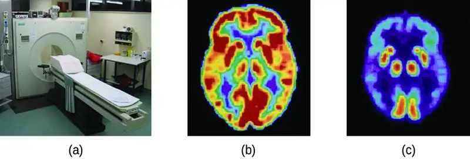
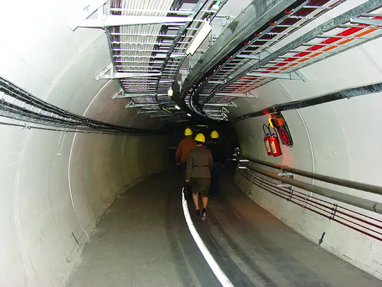
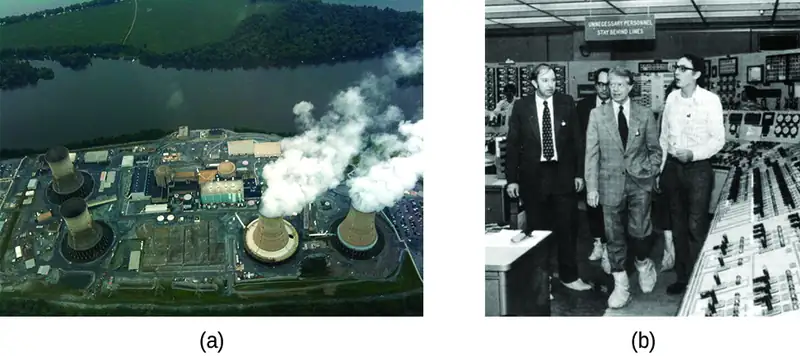
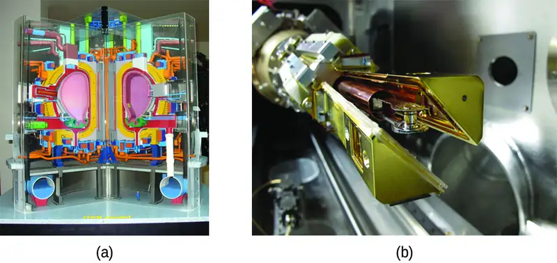
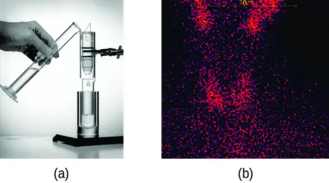
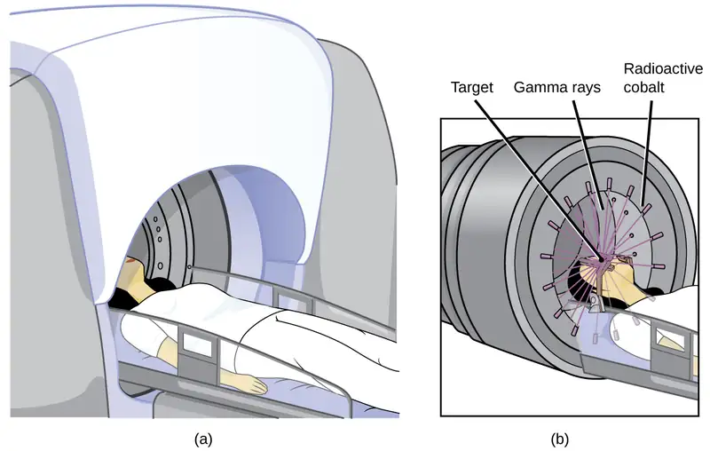
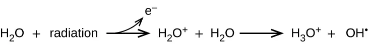
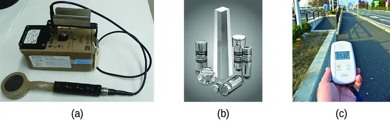
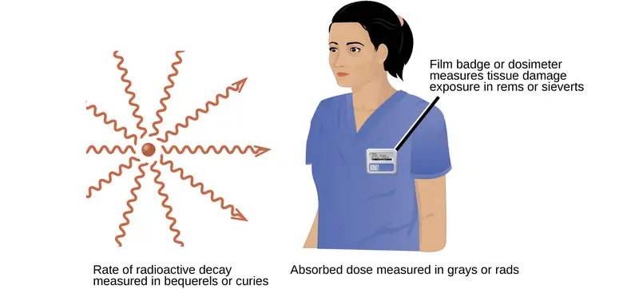

Chapter 21: Nuclear Chemistry¶
Introduction¶
Learning Objectives
- Nuclear Structure and Stability
- Nuclear Equations
- Radioactive Decay
- Transmutation and Nuclear Energy
- Uses of Radioisotopes
- Biological Effects of Radiation
![An image shows four sets of medical pictures. The first is the torso and arms of a human skeleton with purple shading in the muscular regions. The second is a set of four images; the top left, labeled “Smoker,” shows an oval-shaped image that is blue on the outside rim, green as you move inward, and bright red near the center while the top right, labeled “Non-Smoker,” shows an oval-shaped image that is shaded bright green over most of the image and bright red near the center. The lower left image of the four, labeled “Alcoholic,” shows an oval-shaped image that is almost entirely blue with two small yellow-rimmed, red dots near the upper middle section while the lower right image, labeled “Normal,” looks very similar to the lower left, but the red regions are slightly larger. The final image show two scans of a human torso that is turned to face to the side. The left scan has three bright yellow-white areas; one in the throat, one in the chest and one in the head. The right scan is the same as the left except the bright regions are dim and the internal organs are more clearly defined.](img/cnx-chem-21-00-nuclearmed.webp)
The chemical reactions that we have considered in previous chapters involve changes in the electronic structure of the species involved, that is, the arrangement of the electrons around atoms, ions, or molecules. Nuclear structure, the numbers of protons and neutrons within the nuclei of the atoms involved, remains unchanged during chemical reactions.
This chapter will introduce the topic of nuclear chemistry, which began with the discovery of radioactivity in 1896 by French physicist Antoine Becquerel and has become increasingly important during the twentieth and twenty-first centuries, providing the basis for various technologies related to energy, medicine, geology, and many other areas.
21.1 Nuclear Structure and Stability¶
Learning Objectives
By the end of this section, you will be able to:
- Describe nuclear structure in terms of protons, neutrons, and electrons
- Calculate mass defect and binding energy for nuclei
- Explain trends in the relative stability of nuclei
Nuclear chemistry is the study of reactions that involve changes in nuclear structure. The chapter on atoms, molecules, and ions introduced the basic idea of nuclear structure, that the nucleus of an atom is composed of protons and, with the exception of \({}_{1}^{1}\text{H},\) neutrons. Recall that the number of protons in the nucleus is called the atomic number (Z) of the element, and the sum of the number of protons and the number of neutrons is the mass number (A). Atoms with the same atomic number but different mass numbers are isotopes of the same element. When referring to a single type of nucleus, we often use the term nuclide and identify it by the notation \({}_{\text{Z}}^{\text{A}}\text{X},\) where X is the symbol for the element, A is the mass number, and Z is the atomic number (for example, \({}_{\;6}^{14}\text{C}).\) Often a nuclide is referenced by the name of the element followed by a hyphen and the mass number. For example, \({}_{\;6}^{14}\text{C}\) is called “carbon-14.”
Protons and neutrons, collectively called nucleons, are packed together tightly in a nucleus. With a radius of about 10−15 meters, a nucleus is quite small compared to the radius of the entire atom, which is about 10−10 meters. Nuclei are extremely dense compared to bulk matter, averaging 1.8 \(\times\) 1014 grams per cubic centimeter. For example, water has a density of 1 gram per cubic centimeter, and iridium, one of the densest elements known, has a density of 22.6 g/cm3. If the earth’s density were equal to the average nuclear density, the earth’s radius would be only about 200 meters (earth’s actual radius is approximately 6.4 \(\times\) 106 meters, 30,000 times larger). Example 21.1 demonstrates just how great nuclear densities can be in the natural world.
Example 21.1 Density of a Neutron Star
Neutron stars form when the core of a very massive star undergoes gravitational collapse, causing the star’s outer layers to explode in a supernova. Composed almost completely of neutrons, they are the densest-known stars in the universe, with densities comparable to the average density of an atomic nucleus. A neutron star in a faraway galaxy has a mass equal to 2.4 solar masses (1 solar mass = \(\text{M}_{\text{☉}}\) = mass of the sun = 1.99 \(\times\) 1030 kg) and a diameter of 26 km.
(a) What is the density of this neutron star?
(b) How does this neutron star’s density compare to the density of a uranium nucleus, which has a diameter of about 15 fm (1 fm = 10–15 m)?
Solution
We can treat both the neutron star and the U-235 nucleus as spheres. Then the density for both is given by:
(a) The radius of the neutron star is \(\frac{1}{2}\;\times\:\text{26 km}=\:\frac{1}{2}\;\times\:2.6\:\times\:{10}^{4}\:\text{m}=1.3\:\times\:{10}^{4}\:\text{m},\) so the density of the neutron star is:
(b) The radius of the U-235 nucleus is \(\frac{1}{2}\;\times 15\:\times\:{10}^{-15}\:\text{m}=7.5\:\times\:{10}^{-15}\:\text{m},\) so the density of the U-235 nucleus is:
These values are fairly similar (same order of magnitude), but the neutron star is more than twice as dense as the U-235 nucleus.
Check Your Learning
Find the density of a neutron star with a mass of 1.97 solar masses and a diameter of 13 km, and compare it to the density of a hydrogen nucleus, which has a diameter of 1.75 fm (1 fm = 1 \(\times\) 10–15 m).
Answer:
The density of the neutron star is 3.4 \(\times\) 1018 kg/m3. The density of a hydrogen nucleus is 6.0 \(\times\) 1017 kg/m3. The neutron star is 5.7 times denser than the hydrogen nucleus.
To hold positively charged protons together in the very small volume of a nucleus requires very strong attractive forces because the positively charged protons repel one another strongly at such short distances. The force of attraction that holds the nucleus together is the strong nuclear force. (The strong force is one of the four fundamental forces that are known to exist. The others are the electromagnetic force, the gravitational force, and the nuclear weak force.) This force acts between protons, between neutrons, and between protons and neutrons. It is very different from the electrostatic force that holds negatively charged electrons around a positively charged nucleus (the attraction between opposite charges). Over distances less than 10−15 meters and within the nucleus, the strong nuclear force is much stronger than electrostatic repulsions between protons; over larger distances and outside the nucleus, it is essentially nonexistent.
Link to Learning
Visit this website for more information about the four fundamental forces.
Nuclear Binding Energy¶
As a simple example of the energy associated with the strong nuclear force, consider the helium atom composed of two protons, two neutrons, and two electrons. The total mass of these six subatomic particles may be calculated as:
However, mass spectrometric measurements reveal that the mass of an \({}_{2}^{4}\text{He}\) atom is 4.0026 amu, less than the combined masses of its six constituent subatomic particles. This difference between the calculated and experimentally measured masses is known as the mass defect of the atom. In the case of helium, the mass defect indicates a “loss” in mass of 4.0331 amu – 4.0026 amu = 0.0305 amu. The loss in mass accompanying the formation of an atom from protons, neutrons, and electrons is due to the conversion of that mass into energy that is evolved as the atom forms. The nuclear binding energy is the energy produced when the atoms’ nucleons are bound together; this is also the energy needed to break a nucleus into its constituent protons and neutrons. In comparison to chemical bond energies, nuclear binding energies are vastly greater, as we will learn in this section. Consequently, the energy changes associated with nuclear reactions are vastly greater than are those for chemical reactions.
The conversion between mass and energy is most identifiably represented by the mass-energy equivalence equation as stated by Albert Einstein:
where E is energy, m is mass of the matter being converted, and c is the speed of light in a vacuum. This equation can be used to find the amount of energy that results when matter is converted into energy. Using this mass-energy equivalence equation, the nuclear binding energy of a nucleus may be calculated from its mass defect, as demonstrated in Example 21.2. A variety of units are commonly used for nuclear binding energies, including electron volts (eV), with 1 eV equaling the amount of energy necessary to the move the charge of an electron across an electric potential difference of 1 volt, making 1 eV = 1.602 \(\times\) 10–19 J.
Example 21.2 Calculation of Nuclear Binding Energy
Determine the binding energy for the nuclide \({}_{2}^{4}\text{He}\) in:
(a) joules per mole of nuclei
(b) joules per nucleus
(c) MeV per nucleus
Solution
The mass defect for a \({}_{2}^{4}\text{He}\) nucleus is 0.0305 amu, as shown previously. Determine the binding energy in joules per nuclide using the mass-energy equivalence equation. To accommodate the requested energy units, the mass defect must be expressed in kilograms (recall that 1 J = 1 kg m2/s2).
(a) First, express the mass defect in g/mol. This is easily done considering the numerical equivalence of atomic mass (amu) and molar mass (g/mol) that results from the definitions of the amu and mole units (refer to the previous discussion in the chapter on atoms, molecules, and ions if needed). The mass defect is therefore 0.0305 g/mol. To accommodate the units of the other terms in the mass-energy equation, the mass must be expressed in kg, since 1 J = 1 kg m2/s2. Converting grams into kilograms yields a mass defect of 3.05 \(\times\) 10–5 kg/mol. Substituting this quantity into the mass-energy equivalence equation yields:
Note that this tremendous amount of energy is associated with the conversion of a very small amount of matter (about 30 mg, roughly the mass of typical drop of water).
(b) The binding energy for a single nucleus is computed from the molar binding energy using Avogadro’s number:
(c) Recall that 1 eV = 1.602 \(\times\) 10–19 J. Using the binding energy computed in part (b):
Check Your Learning
What is the binding energy for the nuclide \({}_{\;9}^{19}\text{F}\) (atomic mass: 18.9984 amu) in MeV per nucleus?
Answer:
148.4 MeV
Because the energy changes for breaking and forming bonds are so small compared to the energy changes for breaking or forming nuclei, the changes in mass during all ordinary chemical reactions are virtually undetectable. As described in the chapter on thermochemistry, the most energetic chemical reactions exhibit enthalpies on the order of thousands of kJ/mol, which is equivalent to mass differences in the nanogram range (10–9 g). On the other hand, nuclear binding energies are typically on the order of billions of kJ/mol, corresponding to mass differences in the milligram range (10–3 g).
Nuclear Stability¶
A nucleus is stable if it cannot be transformed into another configuration without adding energy from the outside. Of the thousands of nuclides that exist, about 250 are stable. A plot of the number of neutrons versus the number of protons for stable nuclei reveals that the stable isotopes fall into a narrow band. This region is known as the band of stability (also called the belt, zone, or valley of stability). The straight line in Figure 21.2 represents nuclei that have a 1:1 ratio of protons to neutrons (n:p ratio). Note that the lighter stable nuclei, in general, have equal numbers of protons and neutrons. For example, nitrogen-14 has seven protons and seven neutrons. Heavier stable nuclei, however, have increasingly more neutrons than protons. For example: iron-56 has 30 neutrons and 26 protons, an n:p ratio of 1.15, whereas the stable nuclide lead-207 has 125 neutrons and 82 protons, an n:p ratio equal to 1.52. This is because larger nuclei have more proton-proton repulsions, and require larger numbers of neutrons to provide compensating strong forces to overcome these electrostatic repulsions and hold the nucleus together.
![A graph is shown where the x-axis is labeled “Number of neutrons, open parenthesis, n, close parenthesis” and has values of 0 to 180 in increments of 10. The y-axis is labeled “Number of protons, open parenthesis, Z, close parenthesis” and has values of 0 to 120 in increments of 10. A green shaded band of varying width, labeled “Radioactive,” extends from point 0 on both axes to 178 on the y-axis and 118 on the x-axis in a linear manner. The width of this band varies from 8 to 18 units in width according to the x-axis measurements. A blue line in a roughly zig-zag pattern runs through the middle of the shaded band and stops at 128 on the y-axis and 82 on the x-axis. This line is labeled “Nonradioactive.” An unlabeled, black, solid line extends from point 0, 0 to 120, 120 in a linear manner.](img/cnx-chem-21-01-bandstable.webp)
The nuclei that are to the left or to the right of the band of stability are unstable and exhibit radioactivity. They change spontaneously (decay) into other nuclei that are either in, or closer to, the band of stability. These nuclear decay reactions convert one unstable isotope (or radioisotope) into another, more stable, isotope. We will discuss the nature and products of this radioactive decay in subsequent sections of this chapter.
Several observations may be made regarding the relationship between the stability of a nucleus and its structure. Nuclei with even numbers of protons, neutrons, or both are more likely to be stable (see Table 21.1). Nuclei with certain numbers of nucleons, known as magic numbers, are stable against nuclear decay. These numbers of protons or neutrons (2, 8, 20, 28, 50, 82, and 126) make complete shells in the nucleus. These are similar in concept to the stable electron shells observed for the noble gases. Nuclei that have magic numbers of both protons and neutrons, such as \({}_{2}^{4}\text{He},\) \({}_{\;8}^{16}\text{O},\) \({}_{20}^{40}\text{Ca},\) and \({}_{\;82}^{208}\text{Pb},\) are called “double magic” and are particularly stable. These trends in nuclear stability may be rationalized by considering a quantum mechanical model of nuclear energy states analogous to that used to describe electronic states earlier in this textbook. The details of this model are beyond the scope of this chapter.
Table 21.1
| Stable Nuclear Isotopes | ||
|---|---|---|
| Number of Stable Isotopes | Proton Number | Neutron Number |
| 157 | even | even |
| 53 | even | odd |
| 50 | odd | even |
| 5 | odd | odd |
The relative stability of a nucleus is correlated with its binding energy per nucleon, the total binding energy for the nucleus divided by the number or nucleons in the nucleus. For instance, we saw in Example 21.2 that the binding energy for a \({}_{2}^{4}\text{He}\) nucleus is 28.4 MeV. The binding energy per nucleon for a \({}_{2}^{4}\text{He}\) nucleus is therefore:
In Example 21.3, we learn how to calculate the binding energy per nucleon of a nuclide on the curve shown in Figure 21.3.
![A graph is shown where the x-axis is labeled “binding energy per nucleon, open parenthesis, M e V, close parenthesis” and has values of 0 to 10 in increments of 1. The y-axis is labeled “Mass number” and has values of 0 to 260 in increments of 20. A line of best fit beginning at point 0, 0 is drawn through points “8, 5.5; 9, 7.3; 18, 7.1; 20, 7.5; 19, 7.9; 27, 7.8; 21, 8.1; 25, 8.4; 37, 8.6; 43, 8.8; 57, 8.6; 60, 8.9; 70, 9; 88, 8.8; 102, 8.9; 108, 8.5; 126, 8.7; 133, 8.8; 143, 8.2; 157, 8.1; 167, 8.2; 195, 7.9; 205, 7.9; 241, 7.3 and 255, 75. An upward-facing arrow near the bottom left of the graph is labeled “Fusion” while a left-facing arrow near the top right is labeled “Fission.”](img/cnx-chem-21-01-bindenergy.webp)
Example 21.3 Calculation of Binding Energy per Nucleon
The iron nuclide \({}_{26}^{56}\text{Fe}\) lies near the top of the binding energy curve (Figure 21.3) and is one of the most stable nuclides. What is the binding energy per nucleon (in MeV) for the nuclide \({}_{26}^{56}\text{Fe}\) (atomic mass of 55.9349 amu)?
Solution
As in Example 21.2, we first determine the mass defect of the nuclide, which is the difference between the mass of 26 protons, 30 neutrons, and 26 electrons, and the observed mass of an \({}_{26}^{56}\text{Fe}\) atom:
We next calculate the binding energy for one nucleus from the mass defect using the mass-energy equivalence equation:
We then convert the binding energy in joules per nucleus into units of MeV per nuclide:
Finally, we determine the binding energy per nucleon by dividing the total nuclear binding energy by the number of nucleons in the atom:
Note that this is almost 25% larger than the binding energy per nucleon for \({}_{2}^{4}\text{He}.\)
(Note also that this is the same process as in Example 21.1, but with the additional step of dividing the total nuclear binding energy by the number of nucleons.)
Check Your Learning
What is the binding energy per nucleon in \({}_{\;9}^{19}\text{F}\) (atomic mass, 18.9984 amu)?
Answer:
7.810 MeV/nucleon
21.2 Nuclear Equations¶
Learning Objectives
By the end of this section, you will be able to:
- Identify common particles and energies involved in nuclear reactions
- Write and balance nuclear equations
Changes of nuclei that result in changes in their atomic numbers, mass numbers, or energy states are nuclear reactions. To describe a nuclear reaction, we use an equation that identifies the nuclides involved in the reaction, their mass numbers and atomic numbers, and the other particles involved in the reaction.
Types of Particles in Nuclear Reactions¶
Many entities can be involved in nuclear reactions. The most common are protons, neutrons, alpha particles, beta particles, positrons, and gamma rays, as shown in Figure 21.4. Protons \(({}_{1}^{1}\text{p},\) also represented by the symbol \({}_{1}^{1}\text{H})\) and neutrons \(({}_{0}^{1}\text{n})\) are the constituents of atomic nuclei, and have been described previously. Alpha particles \(({}_{2}^{4}\text{He},\) also represented by the symbol \({}_{2}^{4}\alpha)\) are high-energy helium nuclei. Beta particles \(({}_{-1}^{\;0}\beta,\) also represented by the symbol \({}_{-1}^{\;0}\text{e})\) are high-energy electrons, and gamma rays are photons of very high-energy electromagnetic radiation. Positrons \(({}_{+1}^{\;0}\text{e},\) also represented by the symbol \({}_{+1}^{\;0}\beta)\) are positively charged electrons (“anti-electrons”). The subscripts and superscripts are necessary for balancing nuclear equations, but are usually optional in other circumstances. For example, an alpha particle is a helium nucleus (He) with a charge of +2 and a mass number of 4, so it is symbolized \({}_{2}^{4}\text{He}.\) This works because, in general, the ion charge is not important in the balancing of nuclear equations.
![This table has four columns and seven rows. The first row is a header row and it labels each column: “Name,” “Symbol(s),” “Representation,” and “Description.” Under the “Name” column are the following: “Alpha particle,” “Beta particle,” “Positron,” “Proton,” “Neutron,” and “Gamma ray.” Under the “Symbol(s)” column are the following: “ superscript 4 stacked over a subscript 2 H e or lowercase alpha,” “superscript 0 stacked over a subscript 1 e or lowercase beta,” “superscript 0 stacked over a positive subscript 1 e or lowercase beta superscript positive sign,” “superscript 1 stacked over a subscript 1 H or lowercase rho superscript 1 stacked over a subscript 1 H,” “superscript 1 stacked over a subscript 0 n or lowercase eta superscript 1 stacked over a subscript 0 n,” and a lowercase gamma. Under the “Representation column,” are the following: two white sphere attached to two blue spheres of about the same size with positive signs in them; a small red sphere with a negative sign in it; a small red sphere with a positive sign in it; a blue spheres with a positive sign in it; a white sphere; and a purple squiggle ling with an arrow pointing right to a lowercase gamma. Under the “Description” column are the following: “(High-energy) helium nuclei consisting of two protons and two neutrons,” “(High-energy) elections,” “Particles with the same mass as an electron but with 1 unit of positive charge,” “Nuclei of hydrogen atoms,” “Particles with a mass approximately equal to that of a proton but with no charge,” and “Very high-energy electromagnetic radiation.”](img/cnx-chem-21-03-radiodecay-d92b.webp)
Note that positrons are exactly like electrons, except they have the opposite charge. They are the most common example of antimatter, particles with the same mass but the opposite state of another property (for example, charge) than ordinary matter. When antimatter encounters ordinary matter, both are annihilated and their mass is converted into energy in the form of gamma rays (γ)—and other much smaller subnuclear particles, which are beyond the scope of this chapter—according to the mass-energy equivalence equation E = mc2, seen in the preceding section. For example, when a positron and an electron collide, both are annihilated and two gamma ray photons are created:
As seen in the chapter discussing light and electromagnetic radiation, gamma rays compose short wavelength, high-energy electromagnetic radiation and are (much) more energetic than better-known X-rays that can behave as particles in the wave-particle duality sense. Gamma rays are a type of high energy electromagnetic radiation produced when a nucleus undergoes a transition from a higher to a lower energy state, similar to how a photon is produced by an electronic transition from a higher to a lower energy level. Due to the much larger energy differences between nuclear energy shells, gamma rays emanating from a nucleus have energies that are typically millions of times larger than electromagnetic radiation emanating from electronic transitions.
Balancing Nuclear Reactions¶
A balanced chemical reaction equation reflects the fact that during a chemical reaction, bonds break and form, and atoms are rearranged, but the total numbers of atoms of each element are conserved and do not change. A balanced nuclear reaction equation indicates that there is a rearrangement during a nuclear reaction, but of nucleons (subatomic particles within the atoms’ nuclei) rather than atoms. Nuclear reactions also follow conservation laws, and they are balanced in two ways:
- The sum of the mass numbers of the reactants equals the sum of the mass numbers of the products.
- The sum of the charges of the reactants equals the sum of the charges of the products.
If the atomic number and the mass number of all but one of the particles in a nuclear reaction are known, we can identify the particle by balancing the reaction. For instance, we could determine that \({}_{\;8}^{17}\text{O}\) is a product of the nuclear reaction of \({}_{\;7}^{14}\text{N}\) and \({}_{2}^{4}\text{He}\) if we knew that a proton, \({}_{1}^{1}\text{H},\) was one of the two products. Example 21.4 shows how we can identify a nuclide by balancing the nuclear reaction.
Example 21.4 Balancing Equations for Nuclear Reactions
The reaction of an α particle with magnesium-25 \(({}_{12}^{25}\text{Mg})\) produces a proton and a nuclide of another element. Identify the new nuclide produced.
Solution
The nuclear reaction can be written as:
where A is the mass number and Z is the atomic number of the new nuclide, X. Because the sum of the mass numbers of the reactants must equal the sum of the mass numbers of the products:
Similarly, the charges must balance, so:
Check the periodic table: The element with nuclear charge = +13 is aluminum. Thus, the product is \({}_{13}^{28}\text{Al}.\)
Check Your Learning
The nuclide \({}_{\;53}^{125}\text{I}\) combines with an electron and produces a new nucleus and no other massive particles. What is the equation for this reaction?
Answer:
\({}_{\;53}^{125}\text{I}+{}_{-1}^{\;0}\text{e}\:\longrightarrow\:{}_{\;52}^{125}\text{Te}\)
Following are the equations of several nuclear reactions that have important roles in the history of nuclear chemistry:
-
The first naturally occurring unstable element that was isolated, polonium, was discovered by the Polish scientist Marie Curie and her husband Pierre in 1898. It decays, emitting α particles:
\[ {}_{\;84}^{212}\text{Po}\:\longrightarrow\:{}_{\;82}^{208}\text{Pb}+{}_{2}^{4}\text{He} \] -
The first nuclide to be prepared by artificial means was an isotope of oxygen, 17O. It was made by Ernest Rutherford in 1919 by bombarding nitrogen atoms with α particles:
\[ {}_{\;7}^{14}\text{N}+{}_{2}^{4}\text{He}\:\longrightarrow\:{}_{\;8}^{17}\text{O}+{}_{1}^{1}\text{H} \] -
James Chadwick discovered the neutron in 1932, as a previously unknown neutral particle produced along with 12C by the nuclear reaction between 9Be and 4He:
\[ {}_{4}^{9}\text{Be}+{}_{2}^{4}\text{He}\:\longrightarrow\:{}_{\;6}^{12}\text{C}+{}_{0}^{1}\text{n} \] -
The first element to be prepared that does not occur naturally on the earth, technetium, was created by bombardment of molybdenum by deuterons (heavy hydrogen, \({}_{1}^{2}\text{H})\), by Emilio Segre and Carlo Perrier in 1937:
\[ {}_{1}^{2}\text{H}+{}_{42}^{97}\text{Mo}\:\longrightarrow\:2{}_{0}^{1}\text{n}+{}_{43}^{97}\text{Tc} \] -
The first controlled nuclear chain reaction was carried out in a reactor at the University of Chicago in 1942. One of the many reactions involved was:
\[ {}_{\;92}^{235}\text{U}+{}_{0}^{1}\text{n}\:\longrightarrow\:{}_{35}^{87}\text{Br}+{}_{\;57}^{146}\text{La}+3{}_{0}^{1}\text{n} \]
21.3 Radioactive Decay¶
Learning Objectives
By the end of this section, you will be able to:
- Recognize common modes of radioactive decay
- Identify common particles and energies involved in nuclear decay reactions
- Write and balance nuclear decay equations
- Calculate kinetic parameters for decay processes, including half-life
- Describe common radiometric dating techniques
Following the somewhat serendipitous discovery of radioactivity by Becquerel, many prominent scientists began to investigate this new, intriguing phenomenon. Among them were Marie Curie (the first woman to win a Nobel Prize, and the only person to win two Nobel Prizes in different sciences—chemistry and physics), who was the first to coin the term “radioactivity,” and Ernest Rutherford (of gold foil experiment fame), who investigated and named three of the most common types of radiation. During the beginning of the twentieth century, many radioactive substances were discovered, the properties of radiation were investigated and quantified, and a solid understanding of radiation and nuclear decay was developed.
The spontaneous change of an unstable nuclide into another is radioactive decay. The unstable nuclide is called the parent nuclide; the nuclide that results from the decay is known as the daughter nuclide. The daughter nuclide may be stable, or it may decay itself. The radiation produced during radioactive decay is such that the daughter nuclide lies closer to the band of stability than the parent nuclide, so the location of a nuclide relative to the band of stability can serve as a guide to the kind of decay it will undergo (Figure 21.5).
![A diagram shows two spheres composed of many smaller white and green spheres connected by a right-facing arrow with another, down-facing arrow coming off of it. The left sphere, labeled “Parent nucleus uranium dash 238” has two white and two green spheres that are near one another and are outlined in red. These two green and two white spheres are shown near the tip of the down-facing arrow and labeled “alpha particle.” The right sphere, labeled “Daughter nucleus radon dash 234,” looks the same as the left, but has a space for four smaller spheres outlined with a red dotted line.](img/cnx-chem-21-03-reaction1.webp)
Link to Learning
Although the radioactive decay of a nucleus is too small to see with the naked eye, we can indirectly view radioactive decay in an environment called a cloud chamber. Click here to learn about cloud chambers and to view an interesting Cloud Chamber Demonstration from the Jefferson Lab.
Types of Radioactive Decay¶
Ernest Rutherford’s experiments involving the interaction of radiation with a magnetic or electric field (Figure 21.6) helped him determine that one type of radiation consisted of positively charged and relatively massive α particles; a second type was made up of negatively charged and much less massive β particles; and a third was uncharged electromagnetic waves, γ rays. We now know that α particles are high-energy helium nuclei, β particles are high-energy electrons, and γ radiation compose high-energy electromagnetic radiation. We classify different types of radioactive decay by the radiation produced.
![A diagram is shown. A gray box on the left side of the diagram labeled “Lead block” has a chamber hollowed out in the center in which a sample labeled “Radioactive substance” is placed. A blue beam is coming from the sample, out of the block, and passing through two horizontally placed plates that are labeled “Electrically charged plates.” The top plate is labeled with a positive sign while the bottom plate is labeled with a negative sign. The beam is shown to break into three beams as it passes in between the plates; in order from top to bottom, they are red, labeled “beta rays,” purple labeled “gamma rays” and green labeled “alpha rays.” The beams are shown to hit a vertical plate labeled “Photographic plate” on the far right side of the diagram.](img/cnx-chem-21-03-radiation.webp)
Alpha (α) decay is the emission of an α particle from the nucleus. For example, polonium-210 undergoes α decay:
Alpha decay occurs primarily in heavy nuclei (A > 200, Z > 83). Because the loss of an α particle gives a daughter nuclide with a mass number four units smaller and an atomic number two units smaller than those of the parent nuclide, the daughter nuclide has a larger n:p ratio than the parent nuclide. If the parent nuclide undergoing α decay lies below the band of stability (refer to Figure 21.2), the daughter nuclide will lie closer to the band.
Beta (β) decay is the emission of an electron from a nucleus. Iodine-131 is an example of a nuclide that undergoes β decay:
Beta decay, which can be thought of as the conversion of a neutron into a proton and a β particle, is observed in nuclides with a large n:p ratio. The beta particle (electron) emitted is from the atomic nucleus and is not one of the electrons surrounding the nucleus. Such nuclei lie above the band of stability. Emission of an electron does not change the mass number of the nuclide but does increase the number of its protons and decrease the number of its neutrons. Consequently, the n:p ratio is decreased, and the daughter nuclide lies closer to the band of stability than did the parent nuclide.
Gamma emission (γ emission) is observed when a nuclide is formed in an excited state and then decays to its ground state with the emission of a γ ray, a quantum of high-energy electromagnetic radiation. The presence of a nucleus in an excited state is often indicated by an asterisk (*). Cobalt-60 emits γ radiation and is used in many applications including cancer treatment:
There is no change in mass number or atomic number during the emission of a γ ray unless the γ emission accompanies one of the other modes of decay.
Positron emission (β+ decay) is the emission of a positron from the nucleus. Oxygen-15 is an example of a nuclide that undergoes positron emission:
Positron emission is observed for nuclides in which the n:p ratio is low. These nuclides lie below the band of stability. Positron decay is the conversion of a proton into a neutron with the emission of a positron. The n:p ratio increases, and the daughter nuclide lies closer to the band of stability than did the parent nuclide.
Electron capture occurs when one of the inner electrons in an atom is captured by the atom’s nucleus. For example, potassium-40 undergoes electron capture:
Electron capture occurs when an inner shell electron combines with a proton and is converted into a neutron. The loss of an inner shell electron leaves a vacancy that will be filled by one of the outer electrons. As the outer electron drops into the vacancy, it will emit energy. In most cases, the energy emitted will be in the form of an X-ray. Like positron emission, electron capture occurs for “proton-rich” nuclei that lie below the band of stability. Electron capture has the same effect on the nucleus as does positron emission: The atomic number is decreased by one and the mass number does not change. This increases the n:p ratio, and the daughter nuclide lies closer to the band of stability than did the parent nuclide. Whether electron capture or positron emission occurs is difficult to predict. The choice is primarily due to kinetic factors, with the one requiring the smaller activation energy being the one more likely to occur.
Figure 21.7 summarizes these types of decay, along with their equations and changes in atomic and mass numbers.
![This table has four columns and six rows. The first row is a header row and it labels each column: “Type,” “Nuclear equation,” “Representation,” and “Change in mass / atomic numbers.” Under the “Type” column are the following: “Alpha decay,” “Beta decay,” “Gamma decay,” “Positron emission,” and “Electron capture.” Under the “Nuclear equation” column are several equations. Each begins with superscript A stacked over subscript Z X. There is a large gap of space and then the following equations: “superscript 4 stacked over subscript 2 He plus superscript A minus 4 stacked over subscript Z minus 2 Y,” “superscript 0 stacked over subscript negative 1 e plus superscript A stacked over subscript Z plus 1 Y,” “superscript 0 stacked over subscript 0 lowercase gamma plus superscript A stacked over subscript Z Y,” “superscript 0 stacked over subscript positive 1 e plus superscript A stacked over subscript Y minus 1 Y,” and “superscript 0 stacked over subscript negative 1 e plus superscript A stacked over subscript Y minus 1 Y.” Under the “Representation” column are the five diagrams. The first shows a cluster of green and white spheres. A section of the cluster containing two white and two green spheres is outlined. There is a right-facing arrow pointing to a similar cluster as previously described, but the outlined section is missing. From the arrow another arrow branches off and points downward. The small cluster to two white spheres and two green spheres appear at the end of the arrow. The next diagram shows the same cluster of white and green spheres. One white sphere is outlined. There is a right-facing arrow to a similar cluster, but the white sphere is missing. Another arrow branches off the main arrow and a red sphere with a negative sign appears at the end. The next diagram shows the same cluster of white and green spheres. The whole sphere is outlined and labeled, “excited nuclear state.” There is a right-facing arrow that points to the same cluster. No spheres are missing. Off the main arrow is another arrow which points to a purple squiggle arrow which in turn points to a lowercase gamma. The next diagram shows the same cluster of white and green spheres. One green sphere is outlined. There is a right-facing arrow to a similar cluster, but the green sphere is missing. Another arrow branches off the main arrow and a red sphere with a positive sign appears at the end. The next diagram shows the same cluster of white and green spheres. One green sphere is outlined. There is a right-facing arrow to a similar cluster, but the green sphere is missing. Two other arrows branch off the main arrow. The first shows a gold sphere with a negative sign joining with the right-facing arrow. The secon points to a blue squiggle arrow labeled, “X-ray.” Under the “Change in mass / atomic numbers” column are the following: “A: decrease by 4, Z: decrease by 2,” “A: unchanged, Z: increased by 1,” “A: unchanged, Z: unchanged,” “A: unchanged, Z: unchanged,” “A: unchanged, Z: decrease by 1,” and “A: unchanged, Z: decrease by 1.”](img/cnx-chem-21-03-radiodecay-e619.webp)
Chemistry in Everyday Life: PET Scan
Positron emission tomography (PET) scans use radiation to diagnose and track health conditions and monitor medical treatments by revealing how parts of a patient’s body function (Figure 21.8). To perform a PET scan, a positron-emitting radioisotope is produced in a cyclotron and then attached to a substance that is used by the part of the body being investigated. This “tagged” compound, or radiotracer, is then put into the patient (injected via IV or breathed in as a gas), and how it is used by the tissue reveals how that organ or other area of the body functions.

For example, F-18 is produced by proton bombardment of 18O \(({}_{\;8}^{18}\text{O}+{}_{1}^{1}\text{p}\:\longrightarrow\:{}_{\;9}^{18}\text{F}+{}_{0}^{1}\text{n})\) and incorporated into a glucose analog called fludeoxyglucose (FDG). How FDG is used by the body provides critical diagnostic information; for example, since cancers use glucose differently than normal tissues, FDG can reveal cancers. The 18F emits positrons that interact with nearby electrons, producing a burst of gamma radiation. This energy is detected by the scanner and converted into a detailed, three-dimensional, color image that shows how that part of the patient’s body functions. Different levels of gamma radiation produce different amounts of brightness and colors in the image, which can then be interpreted by a radiologist to reveal what is going on. PET scans can detect heart damage and heart disease, help diagnose Alzheimer’s disease, indicate the part of a brain that is affected by epilepsy, reveal cancer, show what stage it is, and how much it has spread, and whether treatments are effective. Unlike magnetic resonance imaging and X-rays, which only show how something looks, the big advantage of PET scans is that they show how something functions. PET scans are now usually performed in conjunction with a computed tomography scan.
Radioactive Decay Series¶
The naturally occurring radioactive isotopes of the heaviest elements fall into chains of successive disintegrations, or decays, and all the species in one chain constitute a radioactive family, or radioactive decay series. Three of these series include most of the naturally radioactive elements of the periodic table. They are the uranium series, the actinide series, and the thorium series. The neptunium series is a fourth series, which is no longer significant on the earth because of the short half-lives of the species involved. Each series is characterized by a parent (first member) that has a long half-life and a series of daughter nuclides that ultimately lead to a stable end-product—that is, a nuclide on the band of stability (Figure 21.9). In all three series, the end-product is a stable isotope of lead. The neptunium series, previously thought to terminate with bismuth-209, terminates with thallium-205.
![A graph is shown where the x-axis is labeled “Number of neutrons, open parenthesis, n, close parenthesis” and has values of 122 to 148 in increments of 2. The y-axis is labeled “Atomic number” and has values of 80 to 92 in increments of 1. Two types of arrows are used in this graph to connect the points. Green arrows are labeled as “alpha decay” while red arrows are labeled “beta decay.” Beginning at the point “92, 146” that is labeled “superscript 238, U,” a green arrow connects this point to the second point “90, 144” which is labeled “superscript 234, T h.” A red arrow connect this to the third point “91, 143” which is labeled “superscript 234, P a” which is connected to the fourth point “92, 142” by a red arrow and which is labeled “superscript 234, U.” A green arrow leads to the next point, “90, 140” which is labeled “superscript 230, T h” and is connected by a green arrow to the sixth point, “88, 138” which is labeled “superscript 226, R a” that is in turn connected by a green arrow to the seventh point “86, 136” which is labeled “superscript 222, Ra.” The eighth point, at “84, 134” is labeled “superscript 218, P o” and has green arrows leading to it and away from it to the ninth point “82, 132” which is labeled “superscript 214, Pb” which is connected by a red arrow to the tenth point, “83, 131” which is labeled “superscript 214, B i.” A red arrow leads to the eleventh point “84, 130” which is labeled “superscript 214, P o” and a green arrow leads to the twelvth point “82, 128” which is labeled “superscript 210, P b.” A red arrow leads to the thirteenth point “83, 127” which is labeled “superscript 210, B i” and a red arrow leads to the fourteenth point “84, 126” which is labeled “superscript 210, P o.” The final point is labeled “82, 124” and “superscript 206, P b.”](img/cnx-chem-21-03-decays.webp)
Radioactive Half-Lives¶
Radioactive decay follows first-order kinetics. Since first-order reactions have already been covered in detail in the kinetics chapter, we will now apply those concepts to nuclear decay reactions. Each radioactive nuclide has a characteristic, constant half-life (t1/2), the time required for half of the atoms in a sample to decay. An isotope’s half-life allows us to determine how long a sample of a useful isotope will be available, and how long a sample of an undesirable or dangerous isotope must be stored before it decays to a low-enough radiation level that is no longer a problem.
For example, cobalt-60, an isotope that emits gamma rays used to treat cancer, has a half-life of 5.27 years (Figure 21.10). In a given cobalt-60 source, since half of the \({}_{27}^{60}\text{Co}\) nuclei decay every 5.27 years, both the amount of material and the intensity of the radiation emitted is cut in half every 5.27 years. (Note that for a given substance, the intensity of radiation that it produces is directly proportional to the rate of decay of the substance and the amount of the substance.) This is as expected for a process following first-order kinetics. Thus, a cobalt-60 source that is used for cancer treatment must be replaced regularly to continue to be effective.
![A graph, titled “C o dash 60 Decay,” is shown where the x-axis is labeled “C o dash 60 remaining, open parenthesis, percent sign, close parenthesis” and has values of 0 to 100 in increments of 25. The y-axis is labeled “Number of half dash lives” and has values of 0 to 5 in increments of 1. The first point, at “0, 100” has a circle filled with tiny dots drawn near it labeled “10 g.” The second point, at “1, 50” has a smaller circle filled with tiny dots drawn near it labeled “5 g.” The third point, at “2, 25” has a small circle filled with tiny dots drawn near it labeled “2.5 g.” The fourth point, at “3, 12.5” has a very small circle filled with tiny dots drawn near it labeled “1.25 g.” The last point, at “4, 6.35” has a tiny circle filled with tiny dots drawn near it labeled.”625 g.”](img/cnx-chem-21-03-halflife.webp)
Since nuclear decay follows first-order kinetics, we can adapt the mathematical relationships used for first-order chemical reactions. We generally substitute the number of nuclei, N, for the concentration. If the rate is stated in nuclear decays per second, we refer to it as the activity of the radioactive sample. The rate for radioactive decay is:
decay rate = λN with λ = the decay constant for the particular radioisotope
The decay constant, λ, which is the same as a rate constant discussed in the kinetics chapter. It is possible to express the decay constant in terms of the half-life, t1/2:
The first-order equations relating amount, N, and time are:
where N0 is the initial number of nuclei or moles of the isotope, and Nt is the number of nuclei/moles remaining at time t. Example 21.5 applies these calculations to find the rates of radioactive decay for specific nuclides.
Example 21.5 Rates of Radioactive Decay
\({}_{27}^{60}\text{Co}\) decays with a half-life of 5.27 years to produce \({}_{28}^{60}\text{Ni}.\)
(a) What is the decay constant for the radioactive disintegration of cobalt-60?
(b) Calculate the fraction of a sample of the \({}_{27}^{60}\text{Co}\) isotope that will remain after 15 years.
(c) How long does it take for a sample of \({}_{27}^{60}\text{Co}\) to disintegrate to the extent that only 2.0% of the original amount remains?
Solution
(a) The value of the rate constant is given by:
(b) The fraction of \({}_{27}^{60}\text{Co}\) that is left after time t is given by \(\frac{N_{t}}{N_{0}}.\) Rearranging the first-order relationship Nt = N0e–λt to solve for this ratio yields:
The fraction of \({}_{27}^{60}\text{Co}\) that will remain after 15.0 years is 0.138. Or put another way, 13.8% of the \({}_{27}^{60}\text{Co}\) originally present will remain after 15 years.
(c) 2.00% of the original amount of \({}_{27}^{60}\text{Co}\) is equal to 0.0200 \(\times\) N0. Substituting this into the equation for time for first-order kinetics, we have:
Check Your Learning
Radon-222, \({}_{\;86}^{222}\text{Rn},\) has a half-life of 3.823 days. How long will it take a sample of radon-222 with a mass of 0.750 g to decay into other elements, leaving only 0.100 g of radon-222?
Answer:
11.1 days
Because each nuclide has a specific number of nucleons, a particular balance of repulsion and attraction, and its own degree of stability, the half-lives of radioactive nuclides vary widely. For example: the half-life of \({}_{\;83}^{209}\text{Bi}\) is 1.9 \(\times\) 1019 years; \({}_{\;94}^{239}\text{Ra}\) is 24,000 years; \({}_{\;86}^{222}\text{Rn}\) is 3.82 days; and element-111 (Rg for roentgenium) is 1.5 \(\times\) 10–3 seconds. The half-lives of a number of radioactive isotopes important to medicine are shown in Table 21.2, and others are listed in Appendix M.
Table 21.2
| Half-lives of Radioactive Isotopes Important to Medicine | |||
|---|---|---|---|
| Type1 | Decay Mode | Half-Life | Uses |
| F-18 | β+ decay | 110. minutes | PET scans |
| Co-60 | β decay, γ decay | 5.27 years | cancer treatment |
| Tc-99m | γ decay | 8.01 hours | scans of brain, lung, heart, bone |
| I-131 | β decay | 8.02 days | thyroid scans and treatment |
| Tl-201 | electron capture | 73 hours | heart and arteries scans; cardiac stress tests |
Radiometric Dating¶
Several radioisotopes have half-lives and other properties that make them useful for purposes of “dating” the origin of objects such as archaeological artifacts, formerly living organisms, or geological formations. This process is radiometric dating and has been responsible for many breakthrough scientific discoveries about the geological history of the earth, the evolution of life, and the history of human civilization. We will explore some of the most common types of radioactive dating and how the particular isotopes work for each type.
Radioactive Dating Using Carbon-14¶
The radioactivity of carbon-14 provides a method for dating objects that were a part of a living organism. This method of radiometric dating, which is also called radiocarbon dating or carbon-14 dating, is accurate for dating carbon-containing substances that are up to about 30,000 years old, and can provide reasonably accurate dates up to a maximum of about 50,000 years old.
Naturally occurring carbon consists of three isotopes: \({}_{\;6}^{12}\text{C}{,}\) which constitutes about 99% of the carbon on earth; \({}_{\;6}^{13}\text{C}{,}\) about 1% of the total; and trace amounts of \({}_{\;6}^{14}\text{C}.\) Carbon-14 forms in the upper atmosphere by the reaction of nitrogen atoms with neutrons from cosmic rays in space:
All isotopes of carbon react with oxygen to produce CO2 molecules. The ratio of \({}_{\;6}^{14}\text{C}\text{O}_{2}\) to \({}_{\;6}^{12}\text{C}\text{O}_{2}\) depends on the ratio of \({}_{\;6}^{14}\text{C}\text{O}\) to \({}_{\;6}^{12}\text{C}\text{O}\) in the atmosphere. The natural abundance of \({}_{\;6}^{14}\text{C}\text{O}\) in the atmosphere is approximately 1 part per trillion; until recently, this has generally been constant over time, as seen is gas samples found trapped in ice. The incorporation of \({}_{\;6}^{14}\text{C}{}_{\;6}^{14}\text{C}\text{O}_{2}\) and \({}_{\;6}^{12}\text{C}\text{O}_{2}\) into plants is a regular part of the photosynthesis process, which means that the \({}_{\;6}^{14}\text{C}\text{:}\:{}_{\;6}^{12}\text{C}\) ratio found in a living plant is the same as the \({}_{\;6}^{14}\text{C}\text{:}\:{}_{\;6}^{12}\text{C}\) ratio in the atmosphere. But when the plant dies, it no longer traps carbon through photosynthesis. Because \({}_{\;6}^{12}\text{C}\) is a stable isotope and does not undergo radioactive decay, its concentration in the plant does not change. However, carbon-14 decays by β emission with a half-life of 5730 years:
Thus, the \({}_{\;6}^{14}\text{C}\text{:}\:{}_{\;6}^{12}\text{C}\) ratio gradually decreases after the plant dies. The decrease in the ratio with time provides a measure of the time that has elapsed since the death of the plant (or other organism that ate the plant). Figure 21.11 visually depicts this process.
![A diagram shows a cow standing on the ground next to a tree. In the upper left of the diagram, where the sky is represented, a single white sphere is shown and is connected by a downward-facing arrow to a larger sphere composed of green and white spheres that is labeled “superscript 14, subscript 7, N.” This structure is connected to three other structures by a right-facing arrow. Each of the three it points to are composed of green and white spheres and all have arrows pointing from them to the ground. The first of these is labeled “Trace, superscript 14, subscript 6, C,” the second is labeled “1 percent, superscript 13, subscript 6, C” and the last is labeled “99 percent, superscript 12, subscript 6, C.” Two downward-facing arrows that merge into one arrow lead from the cow and tree to the ground and are labeled “organism dies” and “superscript 14, subscript 6, C, decay begins.” A right-facing arrow labeled on top as “Decay” and on bottom as “Time” leads from this to a label of “superscript 14, subscript 6, C, backslash, superscript 12, subscript 6, C, ratio decreased.” Near the top of the tree is a downward facing arrow with the label “superscript 14, subscript 6, C, backslash, superscript 12, subscript 6, C, ratio is constant in living organisms” that leads to the last of the lower statements.](img/cnx-chem-21-03-carbondate.webp)
For example, with the half-life of \({}_{\;6}^{14}\text{C}\) being 5730 years, if the \({}_{\;6}^{14}\text{C}\text{:}\:{}_{\;6}^{12}\text{C}\) ratio in a wooden object found in an archaeological dig is half what it is in a living tree, this indicates that the wooden object is 5730 years old. Highly accurate determinations of \({}_{\;6}^{14}\text{C}\text{:}\:{}_{\;6}^{12}\text{C}\) ratios can be obtained from very small samples (as little as a milligram) by the use of a mass spectrometer.
Link to Learning
Visit this website to perform simulations of radiometric dating.
Example 21.6 Radiocarbon Dating
A tiny piece of paper (produced from formerly living plant matter) taken from the Dead Sea Scrolls has an activity of 10.8 disintegrations per minute per gram of carbon. If the initial C-14 activity was 13.6 disintegrations/min/g of C, estimate the age of the Dead Sea Scrolls.
Solution
The rate of decay (number of disintegrations/minute/gram of carbon) is proportional to the amount of radioactive C-14 left in the paper, so we can substitute the rates for the amounts, N, in the relationship:
where the subscript 0 represents the time when the plants were cut to make the paper, and the subscript t represents the current time.
The decay constant can be determined from the half-life of C-14, 5730 years:
Substituting and solving, we have:
Therefore, the Dead Sea Scrolls are approximately 1900 years old (Figure 21.12).
Check Your Learning
More accurate dates of the reigns of ancient Egyptian pharaohs have been determined recently using plants that were preserved in their tombs. Samples of seeds and plant matter from King Tutankhamun’s tomb have a C-14 decay rate of 9.07 disintegrations/min/g of C. How long ago did King Tut’s reign come to an end?
Answer:
about 3350 years ago, or approximately 1340 BC
There have been some significant, well-documented changes to the \({}_{\;6}^{14}\text{C}\text{:}\:{}_{\;6}^{12}\text{C}\) ratio. The accuracy of a straightforward application of this technique depends on the \({}_{\;6}^{14}\text{C}\text{:}\:{}_{\;6}^{12}\text{C}\) ratio in a living plant being the same now as it was in an earlier era, but this is not always valid. Due to the increasing accumulation of CO2 molecules (largely \({}_{\;6}^{12}\text{C}\text{O}_{2})\) in the atmosphere caused by combustion of fossil fuels (in which essentially all of the \({}_{\;6}^{14}\text{C}\) has decayed), the ratio of \({}_{\;6}^{14}\text{C}\text{:}\:{}_{\;6}^{12}\text{C}\) in the atmosphere may be changing. This manmade increase in \({}_{\;6}^{12}\text{C}\text{O}_{2}\) in the atmosphere causes the \({}_{\;6}^{14}\text{C}\text{:}\:{}_{\;6}^{12}\text{C}\) ratio to decrease, and this in turn affects the ratio in currently living organisms on the earth. Fortunately, however, we can use other data, such as tree dating via examination of annual growth rings, to calculate correction factors. With these correction factors, accurate dates can be determined. In general, radioactive dating only works for about 10 half-lives; therefore, the limit for carbon-14 dating is about 57,000 years.
Radioactive Dating Using Nuclides Other than Carbon-14¶
Radioactive dating can also use other radioactive nuclides with longer half-lives to date older events. For example, uranium-238 (which decays in a series of steps into lead-206) can be used for establishing the age of rocks (and the approximate age of the oldest rocks on earth). Since U-238 has a half-life of 4.5 billion years, it takes that amount of time for half of the original U-238 to decay into Pb-206. In a sample of rock that does not contain appreciable amounts of Pb-208, the most abundant isotope of lead, we can assume that lead was not present when the rock was formed. Therefore, by measuring and analyzing the ratio of U-238:Pb-206, we can determine the age of the rock. This assumes that all of the lead-206 present came from the decay of uranium-238. If there is additional lead-206 present, which is indicated by the presence of other lead isotopes in the sample, it is necessary to make an adjustment. Potassium-argon dating uses a similar method. K-40 decays by positron emission and electron capture to form Ar-40 with a half-life of 1.25 billion years. If a rock sample is crushed and the amount of Ar-40 gas that escapes is measured, determination of the Ar-40:K-40 ratio yields the age of the rock. Other methods, such as rubidium-strontium dating (Rb-87 decays into Sr-87 with a half-life of 48.8 billion years), operate on the same principle. To estimate the lower limit for the earth’s age, scientists determine the age of various rocks and minerals, making the assumption that the earth is older than the oldest rocks and minerals in its crust. As of 2014, the oldest known rocks on earth are the Jack Hills zircons from Australia, found by uranium-lead dating to be almost 4.4 billion years old.
Example 21.7 Radioactive Dating of Rocks
An igneous rock contains 9.58 \(\times\) 10–5 g of U-238 and 2.51 \(\times\) 10–5 g of Pb-206, and much, much smaller amounts of Pb-208. Determine the approximate time at which the rock formed.
Solution
The sample of rock contains very little Pb-208, the most common isotope of lead, so we can safely assume that all the Pb-206 in the rock was produced by the radioactive decay of U-238. When the rock formed, it contained all of the U-238 currently in it, plus some U-238 that has since undergone radioactive decay.
The amount of U-238 currently in the rock is:
Because when one mole of U-238 decays, it produces one mole of Pb-206, the amount of U-238 that has undergone radioactive decay since the rock was formed is:
The total amount of U-238 originally present in the rock is therefore:
The amount of time that has passed since the formation of the rock is given by:
with N0 representing the original amount of U-238 and Nt representing the present amount of U-238.
U-238 decays into Pb-206 with a half-life of 4.5 \(\times\) 109 y, so the decay constant λ is:
Substituting and solving, we have:
Therefore, the rock is approximately 1.7 billion years old.
Check Your Learning
A sample of rock contains 6.14 \(\times\) 10–4 g of Rb-87 and 3.51 \(\times\) 10–5 g of Sr-87. Calculate the age of the rock. (The half-life of the β decay of Rb-87 is 4.7 \(\times\) 1010 y.)
Answer:
3.7 \(\times\) 109 y
21.4 Transmutation and Nuclear Energy¶
Learning Objectives
By the end of this section, you will be able to:
- Describe the synthesis of transuranium nuclides
- Explain nuclear fission and fusion processes
- Relate the concepts of critical mass and nuclear chain reactions
- Summarize basic requirements for nuclear fission and fusion reactors
After the discovery of radioactivity, the field of nuclear chemistry was created and developed rapidly during the early twentieth century. A slew of new discoveries in the 1930s and 1940s, along with World War II, combined to usher in the Nuclear Age in the mid-twentieth century. Scientists learned how to create new substances, and certain isotopes of certain elements were found to possess the capacity to produce unprecedented amounts of energy, with the potential to cause tremendous damage during war, as well as produce enormous amounts of power for society’s needs during peace.
Synthesis of Nuclides¶
Nuclear transmutation is the conversion of one nuclide into another. It can occur by the radioactive decay of a nucleus, or the reaction of a nucleus with another particle. The first manmade nucleus was produced in Ernest Rutherford’s laboratory in 1919 by a transmutation reaction, the bombardment of one type of nuclei with other nuclei or with neutrons. Rutherford bombarded nitrogen atoms with high-speed α particles from a natural radioactive isotope of radium and observed protons resulting from the reaction:
The \({}_{\;8}^{17}\text{O}\) and \({}_{1}^{1}\text{H}\) nuclei that are produced are stable, so no further (nuclear) changes occur.
To reach the kinetic energies necessary to produce transmutation reactions, devices called particle accelerators are used. These devices use magnetic and electric fields to increase the speeds of nuclear particles. In all accelerators, the particles move in a vacuum to avoid collisions with gas molecules. When neutrons are required for transmutation reactions, they are usually obtained from radioactive decay reactions or from various nuclear reactions occurring in nuclear reactors. The Chemistry in Everyday Life feature that follows discusses a famous particle accelerator that made worldwide news.
Chemistry in Everyday Life: CERN Particle Accelerator
Located near Geneva, the CERN (“Conseil Européen pour la Recherche Nucléaire,” or European Council for Nuclear Research) Laboratory is the world’s premier center for the investigations of the fundamental particles that make up matter. It contains the 27-kilometer (17 mile) long, circular Large Hadron Collider (LHC), the largest particle accelerator in the world (Figure 21.13). In the LHC, particles are boosted to high energies and are then made to collide with each other or with stationary targets at nearly the speed of light. Superconducting electromagnets are used to produce a strong magnetic field that guides the particles around the ring. Specialized, purpose-built detectors observe and record the results of these collisions, which are then analyzed by CERN scientists using powerful computers.

In 2012, CERN announced that experiments at the LHC showed the first observations of the Higgs boson, an elementary particle that helps explain the origin of mass in fundamental particles. This long-anticipated discovery made worldwide news and resulted in the awarding of the 2013 Nobel Prize in Physics to François Englert and Peter Higgs, who had predicted the existence of this particle almost 50 years previously.
Link to Learning
Famous physicist Brian Cox talks about his work on the Large Hadron Collider at CERN, providing an entertaining and engaging tour of this massive project and the physics behind it.
View a short video from CERN, describing the basics of how its particle accelerators work.
Prior to 1940, the heaviest-known element was uranium, whose atomic number is 92. Now, many artificial elements have been synthesized and isolated, including several on such a large scale that they have had a profound effect on society. One of these—element 93, neptunium (Np)—was first made in 1940 by McMillan and Abelson by bombarding uranium-238 with neutrons. The reaction creates unstable uranium-239, with a half-life of 23.5 minutes, which then decays into neptunium-239. Neptunium-239 is also radioactive, with a half-life of 2.36 days, and it decays into plutonium-239. The nuclear reactions are:
Plutonium is now mostly formed in nuclear reactors as a byproduct during the fission of U-235. Additional neutrons are released during this fission process (see the next section), some of which combine with U-238 nuclei to form uranium-239; this undergoes β decay to form neptunium-239, which in turn undergoes β decay to form plutonium-239 as illustrated in the preceding three equations. These processes are summarized in the equation:
Heavier isotopes of plutonium—Pu-240, Pu-241, and Pu-242—are also produced when lighter plutonium nuclei capture neutrons. Some of this highly radioactive plutonium is used to produce military weapons, and the rest presents a serious storage problem because they have half-lives from thousands to hundreds of thousands of years.
Although they have not been prepared in the same quantity as plutonium, many other synthetic nuclei have been produced. Nuclear medicine has developed from the ability to convert atoms of one type into other types of atoms. Radioactive isotopes of several dozen elements are currently used for medical applications. The radiation produced by their decay is used to image or treat various organs or portions of the body, among other uses.
The elements beyond element 92 (uranium) are called transuranium elements. As of this writing, 22 transuranium elements have been produced and officially recognized by IUPAC; several other elements have formation claims that are waiting for approval. Some of these elements are shown in Table 21.3.
Table 21.3
| Preparation of Some of the Transuranium Elements | |||
|---|---|---|---|
| Name | Symbol | Atomic Number | Reaction |
| americium | Am | 95 | \({}_{\;94}^{239}\text{Pu}+{}_{0}^{1}\text{n}\:\longrightarrow\:{}_{\;95}^{240}\text{Am}+{}_{-1}^{\;0}\text{e}\) |
| curium | Cm | 96 | \({}_{\;94}^{239}\text{Pu}+{}_{2}^{4}\text{He}\:\longrightarrow\:{}_{\;96}^{242}\text{Cm}+{}_{0}^{1}\text{n}\) |
| californium | Cf | 98 | \({}_{\;96}^{242}\text{Cm}+{}_{2}^{4}\text{He}\:\longrightarrow\:{}_{\;98}^{245}\text{Cf}+{}_{0}^{1}\text{n}\) |
| einsteinium | Es | 99 | \({}_{\;92}^{238}\text{U}+15{}_{0}^{1}\text{n}\:\longrightarrow\:{}_{\;99}^{253}\text{Es}+7{}_{-1}^{\;0}\text{e}\) |
| mendelevium | Md | 101 | \({}_{\;99}^{253}\text{Es}+{}_{2}^{4}\text{He}\:\longrightarrow\:{}_{101}^{256}\text{Md}+{}_{0}^{1}\text{n}\) |
| nobelium | No | 102 | \({}_{\;96}^{246}\text{Cm}+{}_{\;6}^{12}\text{C}\:\longrightarrow\:{}_{102}^{254}\text{No}+4{}_{0}^{1}\text{n}\) |
| rutherfordium | Rf | 104 | \({}_{\;98}^{249}\text{Cf}+{}_{\;6}^{12}\text{C}\:\longrightarrow\:{}_{104}^{257}\text{Rf}+4{}_{0}^{1}\text{n}\) |
| seaborgium | Sg | 106 | \(\begin{array}{l} {}_{\;82}^{206}\text{Pb}+{}_{24}^{54}\text{Cr}\:\longrightarrow\:{}_{106}^{257}\text{Sg}+3{}_{0}^{1}\text{n} \\ {}_{\;98}^{249}\text{Cf}+{}_{\;8}^{18}\text{O}\:\longrightarrow\:{}_{106}^{263}\text{Sg}+4{}_{0}^{1}\text{n} \end{array}\) |
| meitnerium | Mt | 107 | \({}_{\;83}^{209}\text{Bi}+{}_{26}^{58}\text{Fe}\:\longrightarrow\:{}_{109}^{266}\text{Mt}+{}_{0}^{1}\text{n}\) |
Nuclear Fission¶
Many heavier elements with smaller binding energies per nucleon can decompose into more stable elements that have intermediate mass numbers and larger binding energies per nucleon—that is, mass numbers and binding energies per nucleon that are closer to the “peak” of the binding energy graph near 56 (see Figure 21.3). Sometimes neutrons are also produced. This decomposition is called fission, the breaking of a large nucleus into smaller pieces. The breaking is rather random with the formation of a large number of different products. Fission usually does not occur naturally, but is induced by bombardment with neutrons. The first reported nuclear fission occurred in 1939 when three German scientists, Lise Meitner, Otto Hahn, and Fritz Strassman, bombarded uranium-235 atoms with slow-moving neutrons that split the U-238 nuclei into smaller fragments that consisted of several neutrons and elements near the middle of the periodic table. Since then, fission has been observed in many other isotopes, including most actinide isotopes that have an odd number of neutrons. A typical nuclear fission reaction is shown in Figure 21.14.
![A diagram is shown which has a white sphere labeled “superscript, 1, subscript 0, n” followed by a right-facing arrow and a large sphere composed of many smaller white and green spheres labeled “superscript, 235, subscript 92, U.” The single sphere has impacted the larger sphere. A right-facing arrow leads from the larger sphere to a vertical dumbbell shaped collection of the same white and green spheres labeled “superscript, 236, subscript 92, U, Unstable nucleus.” Two right-facing arrows lead from the top and bottom of this structure to two new spheres that are also composed of green and white spheres and are slightly smaller than the others. The top sphere is labeled “superscript, 92, subscript 36, K r” while the lower one is labeled “superscript, 141, subscript 56, B a.” A starburst pattern labeled “Energy” lies between these two spheres and has three right-facing arrows leading from it to three white spheres labeled “3, superscript, 1, subscript 0, n.” A balanced nuclear equation is written below the diagram and says “superscript, 235, subscript 92, U, plus sign, superscript, 1, subscript 0, n, yield arrow, superscript, 236, subscript 92, U, yield arrow, superscript, 141, subscript 56, B a, plus sign, superscript, 92, subscript 36, K r, plus sign, 3, superscript, 1, subscript 0, n.”](img/cnx-chem-21-04-fission1.webp)
Among the products of Meitner, Hahn, and Strassman’s fission reaction were barium, krypton, lanthanum, and cerium, all of which have nuclei that are more stable than uranium-235. Since then, hundreds of different isotopes have been observed among the products of fissionable substances. A few of the many reactions that occur for U-235, and a graph showing the distribution of its fission products and their yields, are shown in Figure 21.15. Similar fission reactions have been observed with other uranium isotopes, as well as with a variety of other isotopes such as those of plutonium.
![Five nuclear equations and a graph are shown. The first equation is “superscript, 235, subscript 92, U, plus sign, superscript, 1, subscript 0, n, yield arrow, superscript, 236, subscript 92, U, yield arrow, superscript, 90, subscript 38, S r, plus sign, superscript, 144, subscript 54, X e, plus sign, 2, superscript, 1, subscript 0, n.” The second equation is “superscript, 235, subscript 92, U, plus sign, superscript, 1, subscript 0, n, yield arrow, superscript, 236, subscript 92, U, yield arrow, superscript, 87, subscript 35, B r, plus sign, superscript, 146, subscript 57, L a, plus sign, 3, superscript, 1, subscript 0, n.” The third equation is “superscript, 235, subscript 92, U, plus sign, superscript, 1, subscript 0, n, yield arrow, superscript, 236, subscript 92, U, yield arrow, superscript, 97, subscript 37, R b, plus sign, superscript, 137, subscript 55, C s, plus sign, 3, superscript, 1, subscript 0, n.” The fourth equation is “superscript, 235, subscript 92, U, plus sign, superscript, 1, subscript 0, n, yield arrow, superscript, 236, subscript 92, U, yield arrow, superscript, 137, subscript 52, T e, plus sign, superscript, 97, subscript 40, Z r, plus sign, 2, superscript, 1, subscript 0, n.” The fifth equation is “superscript, 235, subscript 92, U, plus sign, superscript, 1, subscript 0, n, yield arrow, superscript, 236, subscript 92, U, yield arrow, superscript, 141, subscript 56, B a, plus sign, superscript, 92, subscript 36, K r, plus sign, 3, superscript, 1, subscript 0, n.” A graph is also shown where the y-axis is labeled “Fission yield, open parenthesis, percent sign, close parenthesis” and has values of 0 to 9 in increments of 1 while the x-axis is labeled “Mass number” and has values of 60 to 180 in increments of 20. The graph begins near point “65, 0” and rises rapidly to near “92, 6.6,” then drops just as rapidly to “107, 0” and remains there to point “127, 0.” The graph then rises again to near “132, 8,” then goes up and down a bit before falling to a point “153, 0,” and going horizontal.](img/cnx-chem-21-04-fission2.webp)
Link to Learning
View this link to see a simulation of nuclear fission.
A tremendous amount of energy is produced by the fission of heavy elements. For instance, when one mole of U-235 undergoes fission, the products weigh about 0.2 grams less than the reactants; this “lost” mass is converted into a very large amount of energy, about 1.8 \(\times\) 1010 kJ per mole of U-235. Nuclear fission reactions produce incredibly large amounts of energy compared to chemical reactions. The fission of 1 kilogram of uranium-235, for example, produces about 2.5 million times as much energy as is produced by burning 1 kilogram of coal.
As described earlier, when undergoing fission U-235 produces two “medium-sized” nuclei, and two or three neutrons. These neutrons may then cause the fission of other uranium-235 atoms, which in turn provide more neutrons that can cause fission of even more nuclei, and so on. If this occurs, we have a nuclear chain reaction (see Figure 21.16). On the other hand, if too many neutrons escape the bulk material without interacting with a nucleus, then no chain reaction will occur.
![A diagram is shown which has a white sphere labeled “superscript, 1, subscript 0, n” followed by a right-facing arrow and a large sphere composed of many smaller white and green spheres labeled “superscript, 235, subscript 92, U.” The single sphere has impacted the larger sphere. A right-facing arrow leads from the larger sphere to a pair of smaller spheres which are collections of the same white and green spheres. The upper of these two images is labeled “superscript, 93, subscript 36, K r” while the lower of the two is labeled “superscript, 142, subscript 56, B a.” A starburst pattern labeled “Energy” lies between these two spheres and has three right-facing arrows leading from it to three white spheres labeled “ superscript, 1, subscript 0, n.” An equation below this portion of the diagram reads ““superscript, 235, subscript 92, U, plus sign, superscript, 1, subscript 0, n, yield arrow, superscript, 140, subscript 56, B a, plus sign, superscript 90, subscript 36, K r, plus sign, 3, superscript 1, subscript 0, n.” A right-facing arrow leads from each of these white spheres to three larger spheres, each composed of many smaller green and white spheres and labeled, from top to bottom as “a, superscript,235, subscript 92, U,” “b, superscript,235, subscript 92, U” and “c, superscript,235, subscript 92, U.” Each of these spheres is followed by a right-facing arrow which points to a pair of smaller spheres composed of the same green and white spheres with starburst patterns in between each pair labeled “Energy.” The spheres of the top pair are labeled, from top to bottom, “superscript, 96, subscript 37, R b” and “superscript, 137, subscript 55, C s.” The spheres of the middle pair are labeled, from top to bottom, “superscript, 90, subscript 38, S r” and “superscript, 144, subscript 54, X e.” The spheres of the bottom pair are labeled, from top to bottom, “superscript, 87, subscript 35, B r” and “superscript, 146, subscript 57, L a.” Each pair of spheres is followed by three right-facing arrows leading to three white spheres labeled “superscript, 1, subscript 0, n.” Below the diagram are three nuclear equations. Equation a reads “superscript, 235, subscript 92, U, plus sign, superscript, 1, subscript 0, n, yield arrow, superscript, 96, subscript 37, R b, plus sign, superscript 137, subscript 55, C s, plus sign, 3, superscript 1, subscript 0, n.” Equation b reads “superscript, 235, subscript 92, U, plus sign, superscript, 1, subscript 0, n, yield arrow, superscript, 90, subscript 38, S r, plus sign, superscript144, subscript 54, X e, plus sign, 2, superscript 1, subscript 0, n.” Equation c reads “superscript, 235, subscript 92, U, plus sign, superscript, 1, subscript 0, n, yield arrow, superscript, 87, subscript 35, B r, plus sign, superscript 146, subscript 57, L a, plus sign, 3, superscript 1, subscript 0, n”](img/cnx-chem-21-04-chnreact1.webp)
Material that can sustain a nuclear fission chain reaction is said to be fissile or fissionable. (Technically, fissile material can undergo fission with neutrons of any energy, whereas fissionable material requires high-energy neutrons.) Nuclear fission becomes self-sustaining when the number of neutrons produced by fission equals or exceeds the number of neutrons absorbed by splitting nuclei plus the number that escape into the surroundings. The amount of a fissionable material that will support a self-sustaining chain reaction is a critical mass. An amount of fissionable material that cannot sustain a chain reaction is a subcritical mass. An amount of material in which there is an increasing rate of fission is known as a supercritical mass. The critical mass depends on the type of material: its purity, the temperature, the shape of the sample, and how the neutron reactions are controlled (Figure 21.17).
![The images are shown and labeled “a,” “b” and “c.” Image a, labeled “Sub-critical mass,” shows a blue circle background with a white sphere near the outer, top, left edge of the circle. A downward, right-facing arrow indicates that the white sphere enters the circle. Seven small, yellow starbursts are drawn in the blue circle and each has an arrow facing from it to outside the circle, in seemingly random directions. Image b, labeled “Critical mass,” shows a blue circle background with a white sphere near the outer, top, left edge of the circle. A downward, right-facing arrow indicates that the white sphere enters the circle. Seventeen small, yellow starbursts are drawn in the blue circle and each has an arrow facing from it to outside the circle, in seemingly random directions. Image c, labeled “Critical mass from neutron deflection,” shows a blue circle background, lying in a larger purple circle, with a white sphere near the outer, top, left edge of the purple circle. A downward, right-facing arrow indicates that the white sphere enters both of the circles. Thirteen small, yellow starbursts are drawn in the blue circle and each has an arrow facing from it to outside the blue circle, and a couple outside of the purple circle, in seemingly random directions.](img/cnx-chem-21-04-critmass.webp)
An atomic bomb (Figure 21.18) contains several pounds of fissionable material, \({}_{\;92}^{235}\text{U}\) or \({}_{\;94}^{239}\text{Pu},\) a source of neutrons, and an explosive device for compressing it quickly into a small volume. When fissionable material is in small pieces, the proportion of neutrons that escape through the relatively large surface area is great, and a chain reaction does not take place. When the small pieces of fissionable material are brought together quickly to form a body with a mass larger than the critical mass, the relative number of escaping neutrons decreases, and a chain reaction and explosion result.
![Two diagrams are shown, each to the left of a photo, and labeled “a” and “b.” Diagram a shows the outer casing of a bomb that has a long, tubular shape with a squared-off tail. Components in the shell show a tube with a white disk labeled “Detonator” on the left, an orange disk with a bright yellow starburst drawn around it labeled “Conventional explosive” in the middle and a right-facing arrow leading to a blue disk in the nose of the bomb labeled “uranium 235.” A small blue cone next to the orange disk is shares the label of “uranium 235.” A black and white photo next to this diagram shows a far-off shot of a rising cloud over a landscape. Diagram b shows the outer casing of a bomb that has a short, rounded shape with a squared-off tail. Components in the shell show a large orange circle labeled “Conventional explosive” with a series of black dots around its edge, labeled “Detonators,” and a yellow starburst behind it. White arrows face from the outer edge of the orange circle to a blue circle in the center with a yellow core. The blue circle is labeled “plutonium 239” while the yellow core is labeled “beryllium, dash, polonium initiator.” A black and white photo next to this diagram shows a far-off shot of a giant rising cloud over a landscape.](img/cnx-chem-21-04-fissnbomb.webp)
Fission Reactors¶
Chain reactions of fissionable materials can be controlled and sustained without an explosion in a nuclear reactor (Figure 21.19). Any nuclear reactor that produces power via the fission of uranium or plutonium by bombardment with neutrons must have at least five components: nuclear fuel consisting of fissionable material, a nuclear moderator, reactor coolant, control rods, and a shield and containment system. We will discuss these components in greater detail later in the section. The reactor works by separating the fissionable nuclear material such that a critical mass cannot be formed, controlling both the flux and absorption of neutrons to allow shutting down the fission reactions. In a nuclear reactor used for the production of electricity, the energy released by fission reactions is trapped as thermal energy and used to boil water and produce steam. The steam is used to turn a turbine, which powers a generator for the production of electricity.
![A photo labeled “a” and a diagram labeled “b” is shown. The photo is of a power plant with two large white domes and many buildings. The diagram shows a cylindrical container with thick walls labeled “Walls made of concrete and steel” and three main components inside. The first of these components is a pair of tall cylinders labeled “Steam generators” that sit to either side of a shorter cylinder labeled “Core.” Next to the core is a thin cylinder labeled “Pressurizer.” To the left of the outer walls is a set of pistons labeled “Turbines” that sit above a series of other equipment.](img/cnx-chem-21-04-nuclearpwr.webp)
Nuclear Fuels¶
Nuclear fuel consists of a fissionable isotope, such as uranium-235, which must be present in sufficient quantity to provide a self-sustaining chain reaction. In the United States, uranium ores contain from 0.05–0.3% of the uranium oxide U3O8; the uranium in the ore is about 99.3% nonfissionable U-238 with only 0.7% fissionable U-235. Nuclear reactors require a fuel with a higher concentration of U-235 than is found in nature; it is normally enriched to have about 5% of uranium mass as U-235. At this concentration, it is not possible to achieve the supercritical mass necessary for a nuclear explosion. Uranium can be enriched by gaseous diffusion (the only method currently used in the US), using a gas centrifuge, or by laser separation.
In the gaseous diffusion enrichment plant where U-235 fuel is prepared, UF6 (uranium hexafluoride) gas at low pressure moves through barriers that have holes just barely large enough for UF6 to pass through. The slightly lighter 235UF6 molecules diffuse through the barrier slightly faster than the heavier 238UF6 molecules. This process is repeated through hundreds of barriers, gradually increasing the concentration of 235UF6 to the level needed by the nuclear reactor. The basis for this process, Graham’s law, is described in the chapter on gases. The enriched UF6 gas is collected, cooled until it solidifies, and then taken to a fabrication facility where it is made into fuel assemblies. Each fuel assembly consists of fuel rods that contain many thimble-sized, ceramic-encased, enriched uranium (usually UO2) fuel pellets. Modern nuclear reactors may contain as many as 10 million fuel pellets. The amount of energy in each of these pellets is equal to that in almost a ton of coal or 150 gallons of oil.
Nuclear Moderators¶
Neutrons produced by nuclear reactions move too fast to cause fission (refer back to Figure 21.17). They must first be slowed to be absorbed by the fuel and produce additional nuclear reactions. A nuclear moderator is a substance that slows the neutrons to a speed that is low enough to cause fission. Early reactors used high-purity graphite as a moderator. Modern reactors in the US exclusively use heavy water \(({{}_{1}^{2}\text{H}}_{2}\text{O})\) or light water (ordinary H2O), whereas some reactors in other countries use other materials, such as carbon dioxide, beryllium, or graphite.
Reactor Coolants¶
A nuclear reactor coolant is used to carry the heat produced by the fission reaction to an external boiler and turbine, where it is transformed into electricity. Two overlapping coolant loops are often used; this counteracts the transfer of radioactivity from the reactor to the primary coolant loop. All nuclear power plants in the US use water as a coolant. Other coolants include molten sodium, lead, a lead-bismuth mixture, or molten salts.
Control Rods¶
Nuclear reactors use control rods (Figure 21.20) to control the fission rate of the nuclear fuel by adjusting the number of slow neutrons present to keep the rate of the chain reaction at a safe level. Control rods are made of boron, cadmium, hafnium, or other elements that are able to absorb neutrons. Boron-10, for example, absorbs neutrons by a reaction that produces lithium-7 and alpha particles:
When control rod assemblies are inserted into the fuel element in the reactor core, they absorb a larger fraction of the slow neutrons, thereby slowing the rate of the fission reaction and decreasing the power produced. Conversely, if the control rods are removed, fewer neutrons are absorbed, and the fission rate and energy production increase. In an emergency, the chain reaction can be shut down by fully inserting all of the control rods into the nuclear core between the fuel rods.
![Two diagrams are shown and labeled “a” and “b.” Diagram a shows a cut-away view of a vertical tube with a flat, horizontal plate near the bottom that connects to a series of vertical pipes lined up next to one another and labeled “Fuel rods.” A second horizontal plate labeled “Grid” lies at the top of the pipes and a second set of thinner, vertical pipes, labeled “Control rods,” leads from this plate to the top of the container. The walls of the container are labeled “Steel pressure vessel.” A blue, right-facing arrow leads from an entry point in the left side of the container and is followed by a second, down-facing blue arrow and a curved, right-facing arrow that trace along the outer, bottom edge of the container. A blue and red arrow follows these and faces up the right side of the container to an exit near the right face where a red, right-facing arrow leads out. Diagram b is a cut-away image of a vertical, rectangular, three dimensional set of vertical pipes. The pipes are labeled “Fuel rods” and are inserted into an upper and lower horizontal plate labeled “Grid.” Four thin rods extend above the pipes and are labeled “Control rods.](img/cnx-chem-21-04-controlrod.webp)
Shield and Containment System¶
During its operation, a nuclear reactor produces neutrons and other radiation. Even when shut down, the decay products are radioactive. In addition, an operating reactor is thermally very hot, and high pressures result from the circulation of water or another coolant through it. Thus, a reactor must withstand high temperatures and pressures, and must protect operating personnel from the radiation. Reactors are equipped with a containment system (or shield) that consists of three parts:
- The reactor vessel, a steel shell that is 3–20-centimeters thick and, with the moderator, absorbs much of the radiation produced by the reactor
- A main shield of 1–3 meters of high-density concrete
- A personnel shield of lighter materials that protects operators from γ rays and X-rays
In addition, reactors are often covered with a steel or concrete dome that is designed to contain any radioactive materials might be released by a reactor accident.
Link to Learning
Click here to watch a 3-minute video from the Nuclear Energy Institute on how nuclear reactors work.
Nuclear power plants are designed in such a way that they cannot form a supercritical mass of fissionable material and therefore cannot create a nuclear explosion. But as history has shown, failures of systems and safeguards can cause catastrophic accidents, including chemical explosions and nuclear meltdowns (damage to the reactor core from overheating). The following Chemistry in Everyday Life feature explores three infamous meltdown incidents.
Chemistry in Everyday Life: Nuclear Accidents
The importance of cooling and containment are amply illustrated by three major accidents that occurred with the nuclear reactors at nuclear power generating stations in the United States (Three Mile Island), the former Soviet Union (Chernobyl), and Japan (Fukushima).
In March 1979, the cooling system of the Unit 2 reactor at Three Mile Island Nuclear Generating Station in Pennsylvania failed, and the cooling water spilled from the reactor onto the floor of the containment building. After the pumps stopped, the reactors overheated due to the high radioactive decay heat produced in the first few days after the nuclear reactor shut down. The temperature of the core climbed to at least 2200 °C, and the upper portion of the core began to melt. In addition, the zirconium alloy cladding of the fuel rods began to react with steam and produced hydrogen:
The hydrogen accumulated in the confinement building, and it was feared that there was danger of an explosion of the mixture of hydrogen and air in the building. Consequently, hydrogen gas and radioactive gases (primarily krypton and xenon) were vented from the building. Within a week, cooling water circulation was restored and the core began to cool. The plant was closed for nearly 10 years during the cleanup process.
Although zero discharge of radioactive material is desirable, the discharge of radioactive krypton and xenon, such as occurred at the Three Mile Island plant, is among the most tolerable. These gases readily disperse in the atmosphere and thus do not produce highly radioactive areas. Moreover, they are noble gases and are not incorporated into plant and animal matter in the food chain. Effectively none of the heavy elements of the core of the reactor were released into the environment, and no cleanup of the area outside of the containment building was necessary (Figure 21.21).

Another major nuclear accident involving a reactor occurred in April 1986, at the Chernobyl Nuclear Power Plant in Ukraine, which was still a part of the former Soviet Union. While operating at low power during an unauthorized experiment with some of its safety devices shut off, one of the reactors at the plant became unstable. Its chain reaction became uncontrollable and increased to a level far beyond what the reactor was designed for. The steam pressure in the reactor rose to between 100 and 500 times the full power pressure and ruptured the reactor. Because the reactor was not enclosed in a containment building, a large amount of radioactive material spewed out, and additional fission products were released, as the graphite (carbon) moderator of the core ignited and burned. The fire was controlled, but over 200 plant workers and firefighters developed acute radiation sickness and at least 32 soon died from the effects of the radiation. It is predicted that about 4000 more deaths will occur among emergency workers and former Chernobyl residents from radiation-induced cancer and leukemia. The reactor has since been encapsulated in steel and concrete, a now-decaying structure known as the sarcophagus. Almost 30 years later, significant radiation problems still persist in the area, and Chernobyl largely remains a wasteland.
In 2011, the Fukushima Daiichi Nuclear Power Plant in Japan was badly damaged by a 9.0-magnitude earthquake and resulting tsunami. Three reactors up and running at the time were shut down automatically, and emergency generators came online to power electronics and coolant systems. However, the tsunami quickly flooded the emergency generators and cut power to the pumps that circulated coolant water through the reactors. High-temperature steam in the reactors reacted with zirconium alloy to produce hydrogen gas. The gas escaped into the containment building, and the mixture of hydrogen and air exploded. Radioactive material was released from the containment vessels as the result of deliberate venting to reduce the hydrogen pressure, deliberate discharge of coolant water into the sea, and accidental or uncontrolled events.
An evacuation zone around the damaged plant extended over 12.4 miles away, and an estimated 200,000 people were evacuated from the area. All 48 of Japan’s nuclear power plants were subsequently shut down, remaining shuttered as of December 2014. Since the disaster, public opinion has shifted from largely favoring to largely opposing increasing the use of nuclear power plants, and a restart of Japan’s atomic energy program is still stalled (Figure 21.22).
![A photo and a map, labeled “a” and “b,” respectively, are shown. Photo a shows a man in a body-covering safety suit working near a series of blue, plastic coated containers. Map b shows a section of land with the ocean on each side. Near the upper right side of the land is a small red dot, labeled “greater than, 12.5, m R backslash, h r,” that is surrounded by a zone of orange that extends in the upper left direction labeled “2.17, dash, 12.5, m R backslash, h r.” The orange is surrounded by an outline of yellow labeled “1.19, dash, 2.17, m R backslash, h r” and a wider outline of green labeled “0.25, dash, 1.19, m R backslash, h r.” A large area of light blue, labeled “0.03, dash, 0.25, m R backslash, h r” surrounds the green area and extends to the lower middle of the map. A large section of the lower middle and left of the land is covered by dark blue, labeled “less than 0.03, m R backslash, h r.”](img/cnx-chem-21-04-fukushima.webp)
The energy produced by a reactor fueled with enriched uranium results from the fission of uranium as well as from the fission of plutonium produced as the reactor operates. As discussed previously, the plutonium forms from the combination of neutrons and the uranium in the fuel. In any nuclear reactor, only about 0.1% of the mass of the fuel is converted into energy. The other 99.9% remains in the fuel rods as fission products and unused fuel. All of the fission products absorb neutrons, and after a period of several months to a few years, depending on the reactor, the fission products must be removed by changing the fuel rods. Otherwise, the concentration of these fission products would increase and absorb more neutrons until the reactor could no longer operate.
Spent fuel rods contain a variety of products, consisting of unstable nuclei ranging in atomic number from 25 to 60, some transuranium elements, including plutonium and americium, and unreacted uranium isotopes. The unstable nuclei and the transuranium isotopes give the spent fuel a dangerously high level of radioactivity. The long-lived isotopes require thousands of years to decay to a safe level. The ultimate fate of the nuclear reactor as a significant source of energy in the United States probably rests on whether or not a politically and scientifically satisfactory technique for processing and storing the components of spent fuel rods can be developed.
Link to Learning
Explore the information in this link to learn about the approaches to nuclear waste management.
Nuclear Fusion and Fusion Reactors¶
The process of converting very light nuclei into heavier nuclei is also accompanied by the conversion of mass into large amounts of energy, a process called fusion. The principal source of energy in the sun is a net fusion reaction in which four hydrogen nuclei fuse and produce one helium nucleus and two positrons. This is a net reaction of a more complicated series of events:
A helium nucleus has a mass that is 0.7% less than that of four hydrogen nuclei; this lost mass is converted into energy during the fusion. This reaction produces about 3.6 \(\times\) 1011 kJ of energy per mole of \({}_{2}^{4}\text{He}\) produced. This is somewhat larger than the energy produced by the nuclear fission of one mole of U-235 (1.8 \(\times\) 1010 kJ), and over 3 million times larger than the energy produced by the (chemical) combustion of one mole of octane (5471 kJ).
It has been determined that the nuclei of the heavy isotopes of hydrogen, a deuteron, \({}_{1}^{2}\text{H}\) and a triton, \({}_{1}^{3}\text{H},\) undergo fusion at extremely high temperatures (thermonuclear fusion). They form a helium nucleus and a neutron:
This change proceeds with a mass loss of 0.0188 amu, corresponding to the release of 1.69 \(\times\) 109 kilojoules per mole of \({}_{2}^{4}\text{He}\) formed. The very high temperature is necessary to give the nuclei enough kinetic energy to overcome the very strong repulsive forces resulting from the positive charges on their nuclei so they can collide.
Useful fusion reactions require very high temperatures for their initiation—about 15,000,000 K or more. At these temperatures, all molecules dissociate into atoms, and the atoms ionize, forming plasma. These conditions occur in an extremely large number of locations throughout the universe—stars are powered by fusion. Humans have already figured out how to create temperatures high enough to achieve fusion on a large scale in thermonuclear weapons. A thermonuclear weapon such as a hydrogen bomb contains a nuclear fission bomb that, when exploded, gives off enough energy to produce the extremely high temperatures necessary for fusion to occur.
Another much more beneficial way to create fusion reactions is in a fusion reactor, a nuclear reactor in which fusion reactions of light nuclei are controlled. Because no solid materials are stable at such high temperatures, mechanical devices cannot contain the plasma in which fusion reactions occur. Two techniques to contain plasma at the density and temperature necessary for a fusion reaction are currently the focus of intensive research efforts: containment by a magnetic field and by the use of focused laser beams (Figure 21.23). A number of large projects are working to attain one of the biggest goals in science: getting hydrogen fuel to ignite and produce more energy than the amount supplied to achieve the extremely high temperatures and pressures that are required for fusion. At the time of this writing, there are no self-sustaining fusion reactors operating in the world, although small-scale controlled fusion reactions have been run for very brief periods.

21.5 Uses of Radioisotopes¶
Learning Objectives
By the end of this section, you will be able to:
- List common applications of radioactive isotopes
Radioactive isotopes have the same chemical properties as stable isotopes of the same element, but they emit radiation, which can be detected. If we replace one (or more) atom(s) with radioisotope(s) in a compound, we can track them by monitoring their radioactive emissions. This type of compound is called a radioactive tracer (or radioactive label). Radioisotopes are used to follow the paths of biochemical reactions or to determine how a substance is distributed within an organism. Radioactive tracers are also used in many medical applications, including both diagnosis and treatment. They are used to measure engine wear, analyze the geological formation around oil wells, and much more.
Radioimmunossays (RIA), for example, rely on radioisotopes to detect the presence and/or concentration of certain antigens. Developed by Rosalyn Sussman Yalow and Solomon Berson in the 1950s, the technique is known for extreme sensitivity, meaning that it can detect and measure very small quantities of a substance. Prior to its discovery, most similar detection relied on large enough quantities to produce visible outcomes. RIA revolutionized and expanded entire fields of study, most notably endocrinology, and is commonly used in narcotics detection, blood bank screening, early cancer screening, hormone measurement, and allergy diagnosis. Based on her significant contribution to medicine, Yalow received a Nobel Prize, making her the second woman to be awarded the prize for medicine.
Radioisotopes have revolutionized medical practice (see Appendix M), where they are used extensively. Over 10 million nuclear medicine procedures and more than 100 million nuclear medicine tests are performed annually in the United States. Four typical examples of radioactive tracers used in medicine are technetium-99 \(({}_{43}^{99}\text{Tc})\), thallium-201 \(({}_{\;81}^{201}\text{Tl})\), iodine-131 \(({}_{\;53}^{131}\text{I})\), and sodium-24 \(({}_{11}^{24}\text{Na})\) . Damaged tissues in the heart, liver, and lungs absorb certain compounds of technetium-99 preferentially. After it is injected, the location of the technetium compound, and hence the damaged tissue, can be determined by detecting the γ rays emitted by the Tc-99 isotope. Thallium-201 (Figure 21.24) becomes concentrated in healthy heart tissue, so the two isotopes, Tc-99 and Tl-201, are used together to study heart tissue. Iodine-131 concentrates in the thyroid gland, the liver, and some parts of the brain. It can therefore be used to monitor goiter and treat thyroid conditions, such as Grave’s disease, as well as liver and brain tumors. Salt solutions containing compounds of sodium-24 are injected into the bloodstream to help locate obstructions to the flow of blood.
Radioisotopes used in medicine typically have short half-lives—for example, the ubiquitous Tc-99m has a half-life of 6.01 hours. This makes Tc-99m essentially impossible to store and prohibitively expensive to transport, so it is made on-site instead. Hospitals and other medical facilities use Mo-99 (which is primarily extracted from U-235 fission products) to generate Tc-99. Mo-99 undergoes β decay with a half-life of 66 hours, and the Tc-99 is then chemically extracted (Figure 21.25). The parent nuclide Mo-99 is part of a molybdate ion, \(\text{MoO}_{4}{}^{2-};\) when it decays, it forms the pertechnetate ion, \(\text{TcO}_{4}{}^{-}.\) These two water-soluble ions are separated by column chromatography, with the higher charge molybdate ion adsorbing onto the alumina in the column, and the lower charge pertechnetate ion passing through the column in the solution. A few micrograms of Mo-99 can produce enough Tc-99 to perform as many as 10,000 tests.

Radioisotopes can also be used, typically in higher doses than as a tracer, as treatment. Radiation therapy is the use of high-energy radiation to damage the DNA of cancer cells, which kills them or keeps them from dividing (Figure 21.26). A cancer patient may receive external beam radiation therapy delivered by a machine outside the body, or internal radiation therapy (brachytherapy) from a radioactive substance that has been introduced into the body. Note that chemotherapy is similar to internal radiation therapy in that the cancer treatment is injected into the body, but differs in that chemotherapy uses chemical rather than radioactive substances to kill the cancer cells.

Cobalt-60 is a synthetic radioisotope produced by the neutron activation of Co-59, which then undergoes β decay to form Ni-60, along with the emission of γ radiation. The overall process is:
The overall decay scheme for this is shown graphically in Figure 21.27.
![A chart shows a horizontal line in the upper left corner labeled “superscript 60 subscript 27 C o” and “5.272 a” with two arrows facing right and downward leading from it. These arrows are labeled “1.48 M e v beta 0.12 percent sign” and “0.31 M e v beta 99.88 percent sign.” The upper of the two arrows points to a horizontal line and the lower arrow points to a second horizontal line. A downward facing arrow lies in between these two horizontal lines and is labeled “1.1732 M e V gamma.” A fourth horizontal line lies at the bottom of the diagram below the second and third lines. A downward facing arrow lies in between it and the third horizontal line. It is labeled “1.3325 M e V gamma.” Below the last horizontal line is the label “superscript 60 subscript 28 N i.”](img/cnx-chem-21-05-co60decay.webp)
Radioisotopes are used in diverse ways to study the mechanisms of chemical reactions in plants and animals. These include labeling fertilizers in studies of nutrient uptake by plants and crop growth, investigations of digestive and milk-producing processes in cows, and studies on the growth and metabolism of animals and plants.
For example, the radioisotope C-14 was used to elucidate the details of how photosynthesis occurs. The overall reaction is:
but the process is much more complex, proceeding through a series of steps in which various organic compounds are produced. In studies of the pathway of this reaction, plants were exposed to CO2 containing a high concentration of \({}_{\;6}^{14}\text{C}\). At regular intervals, the plants were analyzed to determine which organic compounds contained carbon-14 and how much of each compound was present. From the time sequence in which the compounds appeared and the amount of each present at given time intervals, scientists learned more about the pathway of the reaction.
Commercial applications of radioactive materials are equally diverse (Figure 21.28). They include determining the thickness of films and thin metal sheets by exploiting the penetration power of various types of radiation. Flaws in metals used for structural purposes can be detected using high-energy gamma rays from cobalt-60 in a fashion similar to the way X-rays are used to examine the human body. In one form of pest control, flies are controlled by sterilizing male flies with γ radiation so that females breeding with them do not produce offspring. Many foods are preserved by radiation that kills microorganisms that cause the foods to spoil.
Americium-241, an α emitter with a half-life of 458 years, is used in tiny amounts in ionization-type smoke detectors (Figure 21.29). The α emissions from Am-241 ionize the air between two electrode plates in the ionizing chamber. A battery supplies a potential that causes movement of the ions, thus creating a small electric current. When smoke enters the chamber, the movement of the ions is impeded, reducing the conductivity of the air. This causes a marked drop in the current, triggering an alarm.
![A photograph and a diagram are shown. The photograph shows the interior of a smoke detector. A circular piece of plastic in the lower section of the detector is labeled “Alarm” while a metal disk in the top left of the photo is labeled “Ionization chamber.” A battery is on the top right of the detector. The diagram shows an expanded view of the ionization chamber. Inside of the cylindrical casing are two horizontal, circular plates labeled “Metal plates”; the top is labeled with a positive sign and the bottom with a negative sign. Wires are shown connected to the plates and the terminals of a battery on the exterior of the chamber. A disk in the bottom of the chamber is labeled “Americium source” and four arrows, labeled “Alpha particles,” face vertically from this disk, through a hole in the negative plate, and into the upper space of the chamber. Two molecules, with positive signs, made up of two blue spheres and two molecules, with positive signs, made up of two red spheres are in this space, as well as two yellow spheres labeled with negative signs and arrows facing downward. Eleven white dots surround two of the molecules on the right of the image and are labeled “smoke particles. Above the left side of the image is the phrase “No smoke, charged particles complete the circuit” while a phrase above the right side of the image states “Smoke uncharges the particles, circuit is broken, alarm is triggered.”](img/cnx-chem-21-05-smokealarm.webp)
21.6 Biological Effects of Radiation¶
Learning Objectives
By the end of this section, you will be able to:
- Describe the biological impact of ionizing radiation
- Define units for measuring radiation exposure
- Explain the operation of common tools for detecting radioactivity
- List common sources of radiation exposure in the US
The increased use of radioisotopes has led to increased concerns over the effects of these materials on biological systems (such as humans). All radioactive nuclides emit high-energy particles or electromagnetic waves. When this radiation encounters living cells, it can cause heating, break chemical bonds, or ionize molecules. The most serious biological damage results when these radioactive emissions fragment or ionize molecules. For example, alpha and beta particles emitted from nuclear decay reactions possess much higher energies than ordinary chemical bond energies. When these particles strike and penetrate matter, they produce ions and molecular fragments that are extremely reactive. The damage this does to biomolecules in living organisms can cause serious malfunctions in normal cell processes, taxing the organism’s repair mechanisms and possibly causing illness or even death (Figure 21.30).
![A diagram is shown which has a white sphere followed by a right-facing arrow and a large sphere composed of many smaller white and green spheres. The single sphere has impacted the larger sphere. A right-facing arrow leads from the larger sphere to a pair of smaller spheres which are collections of the same white and green spheres. A starburst pattern lies between these two spheres and has three right-facing arrows leading from it to two white spheres and a circle full of ten smaller, peach-colored circles with purple dots in their centers. An arrow leads downward from this circle to a box that contains a helical shape with a starburst near its top left side and is labeled “D N A damage.” A right-facing arrow leads from this circle to a second circle, with nine smaller, peach-colored circles with purple dots in their centers and one fully purple small circle labeled “Cancer cell.” A right-facing arrow leads to a final circle, this time full of the purple cells, that is labeled “Tumor.”](img/cnx-chem-21-06-damage1.webp)
Ionizing and Nonionizing Radiation¶
There is a large difference in the magnitude of the biological effects of nonionizing radiation (for example, light and microwaves) and ionizing radiation, emissions energetic enough to knock electrons out of molecules (for example, α and β particles, γ rays, X-rays, and high-energy ultraviolet radiation) (Figure 21.31).
![A diagram has two vertical sections. The upper section has two right-facing, horizontal arrows labeled “Increasing energy, E” and “Increasing frequency, rho symbol,” respectively. A left-facing, horizontal arrow lies below the first two and is labeled “Increasing wavelength, lambda symbol.” Beginning on the left side of the diagram, a horizontal, sinusoidal line begins and moves across the diagram to the far right, becoming increasingly more compact. The lower section of the diagram has a double ended, horizontal arrow along its top, with the left end drawn in red and labeled “Non-ionizing” and the right end drawn in green and labeled “Ionizing.” Below this is a set of terms, read from left to right as “Broadcast and wireless radio,” “Microwave,” “Terahertz,” “Infrared,” “Visible light,” “Ultraviolet,” “X dash ray,” and “Gamma.” Four columns lie below this row of terms. The first contains the phrases “Non-thermal” and “Induces low currents” while the second reads “Thermal” and “Induces high currents, Heating.” The third contains the phrases “Optical” and “Excites electrons, Photo, dash, chemical effects” while the fourth reads “Broken bonds” and “Damages D N A.” A series of terms lie below these columns are read, from left to right, “Static field,” “Power line,” “A M radio,” “F M radio,” “Microwave oven,” “Heat lamp,” “Tanning booth” and “Medical x, dash rays.”](img/cnx-chem-21-06-ionradspec.webp)
Energy absorbed from nonionizing radiation speeds up the movement of atoms and molecules, which is equivalent to heating the sample. Although biological systems are sensitive to heat (as we might know from touching a hot stove or spending a day at the beach in the sun), a large amount of nonionizing radiation is necessary before dangerous levels are reached. Ionizing radiation, however, may cause much more severe damage by breaking bonds or removing electrons in biological molecules, disrupting their structure and function. The damage can also be done indirectly, by first ionizing H2O (the most abundant molecule in living organisms), which forms a H2O+ ion that reacts with water, forming a hydronium ion and a hydroxyl radical:

Because the hydroxyl radical has an unpaired electron, it is highly reactive. (This is true of any substance with unpaired electrons, known as a free radical.) This hydroxyl radical can react with all kinds of biological molecules (DNA, proteins, enzymes, and so on), causing damage to the molecules and disrupting physiological processes. Examples of direct and indirect damage are shown in Figure 21.32.
![Two pairs of images are shown and labeled “a” and “b.” In the first pair, a helical structure on the left with a starburst on it middle right side is connected by a right-facing arrow to a sphere composed of smaller green and white spheres. A squiggly arrow points toward the sphere from the upper left and a downward-facing arrow leads away from the sphere to a small circle with a negative sign. In the second pair of images, a squiggly arrow lead to a water molecule while a downward-facing arrow leads away from it to a small circle with a negative charge written on it. A helical shape with a starburst on it middle right side is drawn to the far right and an upward-facing arrow leads to it from the following equation “H, subscript 2, O, plus sign, radiation, yield arrow, H, subscript 2, O, superscript plus sign, plus sign, e, superscript negative sign, down-facing arrow, H, subscript 2, O, superscript plus sign, plus sign, H, subscript 2, O, right-facing arrow, H, subscript 3, O, superscript plus sign, plus sign, O H, superscript negative sign. Below this equation is the phrase “Indirect effect.”](img/cnx-chem-21-06-damage2.webp)
Biological Effects of Exposure to Radiation¶
Radiation can harm either the whole body (somatic damage) or eggs and sperm (genetic damage). Its effects are more pronounced in cells that reproduce rapidly, such as the stomach lining, hair follicles, bone marrow, and embryos. This is why patients undergoing radiation therapy often feel nauseous or sick to their stomach, lose hair, have bone aches, and so on, and why particular care must be taken when undergoing radiation therapy during pregnancy.
Different types of radiation have differing abilities to pass through material (Figure 21.33). A very thin barrier, such as a sheet or two of paper, or the top layer of skin cells, usually stops alpha particles. Because of this, alpha particle sources are usually not dangerous if outside the body, but are quite hazardous if ingested or inhaled (see the Chemistry in Everyday Life feature on Radon Exposure). Beta particles will pass through a hand, or a thin layer of material like paper or wood, but are stopped by a thin layer of metal. Gamma radiation is very penetrating and can pass through a thick layer of most materials. Some high-energy gamma radiation is able to pass through a few feet of concrete. Certain dense, high atomic number elements (such as lead) can effectively attenuate gamma radiation with thinner material and are used for shielding. The ability of various kinds of emissions to cause ionization varies greatly, and some particles have almost no tendency to produce ionization. Alpha particles have about twice the ionizing power of fast-moving neutrons, about 10 times that of β particles, and about 20 times that of γ rays and X-rays.
![A diagram shows four particles in a vertical column on the left, followed by an upright sheet of paper, a person’s hand, an upright sheet of metal, a glass of water, a thick block of concrete and an upright, thick piece of lead. The top particle listed is made up of two white spheres and two green spheres that are labeled with positive signs and is labeled “Alpha.” A right-facing arrow leads from this to the paper. The second particle is a red sphere labeled “Beta” and is followed by a right-facing arrow that passes through the paper and stops at the hand. The third particle is a white sphere labeled “Neutron” and is followed by a right-facing arrow that passes through the paper, hand and metal but is stopped at the glass of water. The fourth particle is shown by a squiggly arrow and it passes through all of the substances but stops at the lead. Terms at the bottom read, from left to right, “Paper,” “Metal,” “Water,” “Concrete” and “Lead.”](img/cnx-chem-21-06-penetrate.webp)
Chemistry in Everyday Life: Radon Exposure
For many people, one of the largest sources of exposure to radiation is from radon gas (Rn-222). Radon-222 is an α emitter with a half–life of 3.82 days. It is one of the products of the radioactive decay series of U-238 (Figure 21.9), which is found in trace amounts in soil and rocks. The radon gas that is produced slowly escapes from the ground and gradually seeps into homes and other structures above. Since it is about eight times more dense than air, radon gas accumulates in basements and lower floors, and slowly diffuses throughout buildings (Figure 21.34).
![A cut-away image of the side of a house and four layers of the ground it rests on is shown, as well as a second cut-away image of a person’s head and chest cavity. The house is shown with a restroom on the second floor and a basement with a water heater as the first floor. Green arrows lead from the lowest ground layer, labeled “radon in ground water,” from the third ground layer, labeled “Bedrock” and “Fractured bedrock,” from the second layer, labeled “radon in well water,” and from the top layer, labeled “radon in soil to the inside of the basement area. In the smaller image of the torso, a green arrow is shown to enter the person’s nasal passage and travel to the lungs. This is labeled “Inhalation of radon decay products.” A small coiled, helical structure next to the torso is labeled “alpha particle” on one section where it has a starburst pattern and “Radiation damage to D N A” on another segment.](img/cnx-chem-21-06-radonexpos.webp)
Radon is found in buildings across the country, with amounts depending on where you live. The average concentration of radon inside houses in the US (1.25 pCi/L) is about three times the levels found in outside air, and about one in six houses have radon levels high enough that remediation efforts to reduce the radon concentration are recommended. Exposure to radon increases one’s risk of getting cancer (especially lung cancer), and high radon levels can be as bad for health as smoking a carton of cigarettes a day. Radon is the number one cause of lung cancer in nonsmokers and the second leading cause of lung cancer overall. Radon exposure is believed to cause over 20,000 deaths in the US per year.
Measuring Radiation Exposure¶
Several different devices are used to detect and measure radiation, including Geiger counters, scintillation counters (scintillators), and radiation dosimeters (Figure 21.35). Probably the best-known radiation instrument, the Geiger counter (also called the Geiger-Müller counter) detects and measures radiation. Radiation causes the ionization of the gas in a Geiger-Müller tube. The rate of ionization is proportional to the amount of radiation. A scintillation counter contains a scintillator—a material that emits light (luminesces) when excited by ionizing radiation—and a sensor that converts the light into an electric signal. Radiation dosimeters also measure ionizing radiation and are often used to determine personal radiation exposure. Commonly used types are electronic, film badge, thermoluminescent, and quartz fiber dosimeters.

A variety of units are used to measure various aspects of radiation (Figure 21.36). The SI unit for rate of radioactive decay is the becquerel (Bq), with 1 Bq = 1 disintegration per second. The curie (Ci) and millicurie (mCi) are much larger units and are frequently used in medicine (1 curie = 1 Ci = 3.7 \(\times\) 1010 disintegrations per second). The SI unit for measuring radiation dose is the gray (Gy), with 1 Gy = 1 J of energy absorbed per kilogram of tissue. In medical applications, the radiation absorbed dose (rad) is more often used (1 rad = 0.01 Gy; 1 rad results in the absorption of 0.01 J/kg of tissue). The SI unit measuring tissue damage caused by radiation is the sievert (Sv). This takes into account both the energy and the biological effects of the type of radiation involved in the radiation dose. The roentgen equivalent for man (rem) is the unit for radiation damage that is used most frequently in medicine (100 rem = 1 Sv). Note that the tissue damage units (rem or Sv) includes the energy of the radiation dose (rad or Gy) along with a biological factor referred to as the RBE (for relative biological effectiveness) that is an approximate measure of the relative damage done by the radiation. These are related by:
with RBE approximately 10 for α radiation, 2(+) for protons and neutrons, and 1 for β and γ radiation.

Units of Radiation Measurement¶
Table 21.4 summarizes the units used for measuring radiation.
Table 21.4
| Units Used for Measuring Radiation | |||
|---|---|---|---|
| Measurement Purpose | Unit | Quantity Measured | Description |
| activity of source | becquerel (Bq) | radioactive decays or emissions | amount of sample that undergoes 1 decay/second |
| curie (Ci) | amount of sample that undergoes 3.7 \(\times\) 1010 decays/second | ||
| absorbed dose | gray (Gy) | energy absorbed per kg of tissue | 1 Gy = 1 J/kg tissue |
| radiation absorbed dose (rad) | 1 rad = 0.01 J/kg tissue | ||
| biologically effective dose | sievert (Sv) | tissue damage | Sv = RBE \(\times\) Gy |
| roentgen equivalent for man (rem) | Rem = RBE \(\times\) rad | ||
Example 21.8 Amount of Radiation
Cobalt-60 (t1/2 = 5.26 y) is used in cancer therapy since the γ rays it emits can be focused in small areas where the cancer is located. A 5.00-g sample of Co-60 is available for cancer treatment.
(a) What is its activity in Bq?
(b) What is its activity in Ci?
Solution
The activity is given by:
And to convert this to decays per second:
(a) Since 1 Bq = \(\frac{\text{1 decay}}{\text{s}},\) the activity in Becquerel (Bq) is:
(b) Since 1 Ci = \(\frac{3.7\:\times\:{10}^{11}\:\text{decay}}{\text{s}},\) the activity in curie (Ci) is:
Check Your Learning
Tritium is a radioactive isotope of hydrogen (t1/2 = 12.32 y) that has several uses, including self-powered lighting, in which electrons emitted in tritium radioactive decay cause phosphorus to glow. Its nucleus contains one proton and two neutrons, and the atomic mass of tritium is 3.016 amu. What is the activity of a sample containing 1.00mg of tritium (a) in Bq and (b) in Ci?
Answer:
(a) 3.56 \(\times\) 1011 Bq; (b) 0.962 Ci
Effects of Long-term Radiation Exposure on the Human Body¶
The effects of radiation depend on the type, energy, and location of the radiation source, and the length of exposure. As shown in Figure 21.37, the average person is exposed to background radiation, including cosmic rays from the sun and radon from uranium in the ground (see the Chemistry in Everyday Life feature on Radon Exposure); radiation from medical exposure, including CAT scans, radioisotope tests, X-rays, and so on; and small amounts of radiation from other human activities, such as airplane flights (which are bombarded by increased numbers of cosmic rays in the upper atmosphere), radioactivity from consumer products, and a variety of radionuclides that enter our bodies when we breathe (for example, carbon-14) or through the food chain (for example, potassium-40, strontium-90, and iodine-131).
![A bar graph titled “Radiation Doses and Regulatory Limits, open parenthesis, in Millirems, close parenthesis” is shown. The y-axis is labeled “Doses in Millirems” and has values from 0 to 5000 with a break between 1000 and 5000 to indicate a different scale to the top of the graph. The y-axis is labeled corresponding to each bar. The first bar, measured to 5000 on the y-axis, is drawn in red and is labeled “Annual Nuclear Worker Doses Limit, open parenthesis, N R C, close parenthesis.” The second bar, measured to 1000 on the y-axis, is drawn in blue and is labeled “Whole Body C T” while the third bar, measured to 620 on the y-axis, is drawn in blue and is labeled “Average U period S period Annual Dose.” The fourth bar, measured to 310 on the y-axis, is drawn in blue and is labeled “U period S period Natural Background Dose” while the fifth bar, measured to 100 on the y-axis and drawn in red reads “Annual Public Dose Limit, open parenthesis, N R C, close parenthesis.” The sixth bar, measured to 40 on the y-axis, is drawn in blue and is labeled “From Your Body” while the seventh bar, measured to 30 on the y-axis and drawn in blue reads “Cosmic rays.” The eighth bar, measured to 4 on the y-axis, is drawn in blue and is labeled “Safe Drinking Water Limit, open parenthesis, E P A, close parenthesis” while the ninth bar, measured to 2.5 on the y-axis and drawn in red reads “Trans Atlantic Flight.” A legend on the graph shows that red means “Dose Limit From N R C dash licensed activity” while blue means “Radiation Doses.”](img/cnx-chem-21-06-exposure2.webp)
A short-term, sudden dose of a large amount of radiation can cause a wide range of health effects, from changes in blood chemistry to death. Short-term exposure to tens of rems of radiation will likely cause very noticeable symptoms or illness; a dose of about 500 rems is estimated to have a 50% probability of causing the death of the victim within 30 days of exposure. Exposure to radioactive emissions has a cumulative effect on the body during a person’s lifetime, which is another reason why it is important to avoid any unnecessary exposure to radiation. Health effects of short-term exposure to radiation are shown in Table 21.5.
Table 21.5
| Health Effects of Radiation2 | ||
|---|---|---|
| Exposure (rem) | Health Effect | Time to Onset (without treatment) |
| 5–10 | changes in blood chemistry | — |
| 50 | nausea | hours |
| 55 | fatigue | — |
| 70 | vomiting | — |
| 75 | hair loss | 2–3 weeks |
| 90 | diarrhea | — |
| 100 | hemorrhage | — |
| 400 | possible death | within 2 months |
| 1000 | destruction of intestinal lining | — |
| internal bleeding | — | |
| death | 1–2 weeks | |
| 2000 | damage to central nervous system | — |
| loss of consciousness; | minutes | |
| death | hours to days | |
It is impossible to avoid some exposure to ionizing radiation. We are constantly exposed to background radiation from a variety of natural sources, including cosmic radiation, rocks, medical procedures, consumer products, and even our own atoms. We can minimize our exposure by blocking or shielding the radiation, moving farther from the source, and limiting the time of exposure.
Chapter Review¶
Key Terms¶
- alpha (α) decay
- loss of an alpha particle during radioactive decay
- alpha particle
- (α or \({}_{2}^{4}\textbf{He}\) or \({}_{2}^{4}\alpha)\) high-energy helium nucleus; a helium atom that has lost two electrons and contains two protons and two neutrons
- antimatter
- particles with the same mass but opposite properties (such as charge) of ordinary particles
- band of stability
- (also, belt of stability, zone of stability, or valley of stability) region of graph of number of protons versus number of neutrons containing stable (nonradioactive) nuclides
- becquerel (Bq)
- SI unit for rate of radioactive decay; 1 Bq = 1 disintegration/s
- beta (β) decay
- breakdown of a neutron into a proton, which remains in the nucleus, and an electron, which is emitted as a beta particle
- beta particle
- \(\textbf{(β}\) or \({}_{-1}^{\;0}\textbf{e}\) or \({}_{-1}^{\;0}\beta\textbf{)}\) high-energy electron
- binding energy per nucleon
- total binding energy for the nucleus divided by the number of nucleons in the nucleus
- chain reaction
- repeated fission caused when the neutrons released in fission bombard other atoms
- chemotherapy
- similar to internal radiation therapy, but chemical rather than radioactive substances are introduced into the body to kill cancer cells
- containment system
- (also, shield) a three-part structure of materials that protects the exterior of a nuclear fission reactor and operating personnel from the high temperatures, pressures, and radiation levels inside the reactor
- control rod
- material inserted into the fuel assembly that absorbs neutrons and can be raised or lowered to adjust the rate of a fission reaction
- critical mass
- amount of fissionable material that will support a self-sustaining (nuclear fission) chain reaction
- curie (Ci)
- larger unit for rate of radioactive decay frequently used in medicine; 1 Ci = 3.7 \(\times\) 1010 disintegrations/s
- daughter nuclide
- nuclide produced by the radioactive decay of another nuclide; may be stable or may decay further
- electron capture
- combination of a core electron with a proton to yield a neutron within the nucleus
- electron volt (eV)
- measurement unit of nuclear binding energies, with 1 eV equaling the amount energy due to the moving an electron across an electric potential difference of 1 volt
- external beam radiation therapy
- radiation delivered by a machine outside the body
- fissile (or fissionable)
- when a material is capable of sustaining a nuclear fission reaction
- fission
- splitting of a heavier nucleus into two or more lighter nuclei, usually accompanied by the conversion of mass into large amounts of energy
- fusion
- combination of very light nuclei into heavier nuclei, accompanied by the conversion of mass into large amounts of energy
- fusion reactor
- nuclear reactor in which fusion reactions of light nuclei are controlled
- gamma (γ) emission
- decay of an excited-state nuclide accompanied by emission of a gamma ray
- gamma ray
- (γ or \({}_{0}^{0}\gamma\textbf{)}\) short wavelength, high-energy electromagnetic radiation that exhibits wave-particle duality
- Geiger counter
- instrument that detects and measures radiation via the ionization produced in a Geiger-Müller tube
- gray (Gy)
- SI unit for measuring radiation dose; 1 Gy = 1 J absorbed/kg tissue
- half-life (t1/2)
- time required for half of the atoms in a radioactive sample to decay
- internal radiation therapy
- (also, brachytherapy) radiation from a radioactive substance introduced into the body to kill cancer cells
- ionizing radiation
- radiation that can cause a molecule to lose an electron and form an ion
- magic number
- nuclei with specific numbers of nucleons that are within the band of stability
- mass defect
- difference between the mass of an atom and the summed mass of its constituent subatomic particles (or the mass “lost” when nucleons are brought together to form a nucleus)
- mass-energy equivalence equation
- Albert Einstein’s relationship showing that mass and energy are equivalent
- millicurie (mCi)
- larger unit for rate of radioactive decay frequently used in medicine; 1 Ci = 3.7 \(\times\) 1010 disintegrations/s
- nonionizing radiation
- radiation that speeds up the movement of atoms and molecules; it is equivalent to heating a sample, but is not energetic enough to cause the ionization of molecules
- nuclear binding energy
- energy lost when an atom’s nucleons are bound together (or the energy needed to break a nucleus into its constituent protons and neutrons)
- nuclear chemistry
- study of the structure of atomic nuclei and processes that change nuclear structure
- nuclear fuel
- fissionable isotope present in sufficient quantities to provide a self-sustaining chain reaction in a nuclear reactor
- nuclear moderator
- substance that slows neutrons to a speed low enough to cause fission
- nuclear reaction
- change to a nucleus resulting in changes in the atomic number, mass number, or energy state
- nuclear reactor
- environment that produces energy via nuclear fission in which the chain reaction is controlled and sustained without explosion
- nuclear transmutation
- conversion of one nuclide into another nuclide
- nucleon
- collective term for protons and neutrons in a nucleus
- nuclide
- nucleus of a particular isotope
- parent nuclide
- unstable nuclide that changes spontaneously into another (daughter) nuclide
- particle accelerator
- device that uses electric and magnetic fields to increase the kinetic energy of nuclei used in transmutation reactions
- positron \(\text{(}{}_{+1}^{\;0}\beta\) or \({}_{+1}^{\;0}\text{e}\text{)}\)
- antiparticle to the electron; it has identical properties to an electron, except for having the opposite (positive) charge
- positron emission
- (also, β+ decay) conversion of a proton into a neutron, which remains in the nucleus, and a positron, which is emitted
- radiation absorbed dose (rad)
- SI unit for measuring radiation dose, frequently used in medical applications; 1 rad = 0.01 Gy
- radiation dosimeter
- device that measures ionizing radiation and is used to determine personal radiation exposure
- radiation therapy
- use of high-energy radiation to damage the DNA of cancer cells, which kills them or keeps them from dividing
- radioactive decay
- spontaneous decay of an unstable nuclide into another nuclide
- radioactive decay series
- chains of successive disintegrations (radioactive decays) that ultimately lead to a stable end-product
- radioactive tracer
- (also, radioactive label) radioisotope used to track or follow a substance by monitoring its radioactive emissions
- radioactivity
- phenomenon exhibited by an unstable nucleon that spontaneously undergoes change into a nucleon that is more stable; an unstable nucleon is said to be radioactive
- radiocarbon dating
- highly accurate means of dating objects 30,000–50,000 years old that were derived from once-living matter; achieved by calculating the ratio of \({}_{\;6}^{14}\text{C}\text{:}\:{}_{\;6}^{12}\text{C}\) in the object vs. the ratio of \({}_{\;6}^{14}\text{C}\text{:}\:{}_{\;6}^{12}\text{C}\) in the present-day atmosphere
- radioisotope
- isotope that is unstable and undergoes conversion into a different, more stable isotope
- radiometric dating
- use of radioisotopes and their properties to date the formation of objects such as archeological artifacts, formerly living organisms, or geological formations
- reactor coolant
- assembly used to carry the heat produced by fission in a reactor to an external boiler and turbine where it is transformed into electricity
- relative biological effectiveness (RBE)
- measure of the relative damage done by radiation
- roentgen equivalent man (rem)
- unit for radiation damage, frequently used in medicine; 100 rem = 1 Sv
- scintillation counter
- instrument that uses a scintillator—a material that emits light when excited by ionizing radiation—to detect and measure radiation
- sievert (Sv)
- SI unit measuring tissue damage caused by radiation; takes into account energy and biological effects of radiation
- strong nuclear force
- force of attraction between nucleons that holds a nucleus together
- subcritical mass
- amount of fissionable material that cannot sustain a chain reaction; less than a critical mass
- supercritical mass
- amount of material in which there is an increasing rate of fission
- transmutation reaction
- bombardment of one type of nuclei with other nuclei or neutrons
- transuranium element
- element with an atomic number greater than 92; these elements do not occur in nature
Key Equations¶
21.1 Nuclear Structure and Stability¶
| E = mc2 |
21.3 Radioactive Decay¶
| decay rate = λN |
| \(t_{1\text{/}2}\:=\:\frac{\text{ln 2}}{\lambda}\:=\:\frac{0.693}{\lambda}\) |
21.6 Biological Effects of Radiation¶
| rem = RBE \(\times\) rad |
| Sv = RBE \(\times\) Gy |
Key Concepts and Summary¶
21.1 Nuclear Structure and Stability¶
An atomic nucleus consists of protons and neutrons, collectively called nucleons. Although protons repel each other, the nucleus is held tightly together by a short-range, but very strong, force called the strong nuclear force. A nucleus has less mass than the total mass of its constituent nucleons. This “missing” mass is the mass defect, which has been converted into the binding energy that holds the nucleus together according to Einstein’s mass-energy equivalence equation, E = mc2. Of the many nuclides that exist, only a small number are stable. Nuclides with even numbers of protons or neutrons, or those with magic numbers of nucleons, are especially likely to be stable. These stable nuclides occupy a narrow band of stability on a graph of number of protons versus number of neutrons. The binding energy per nucleon is largest for the elements with mass numbers near 56; these are the most stable nuclei.
21.2 Nuclear Equations¶
Nuclei can undergo reactions that change their number of protons, number of neutrons, or energy state. Many different particles can be involved in nuclear reactions. The most common are protons, neutrons, positrons (which are positively charged electrons), alpha (α) particles (which are high-energy helium nuclei), beta (β) particles (which are high-energy electrons), and gamma (γ) rays (which compose high-energy electromagnetic radiation). As with chemical reactions, nuclear reactions are always balanced. When a nuclear reaction occurs, the total mass (number) and the total charge remain unchanged.
21.3 Radioactive Decay¶
Nuclei that have unstable n:p ratios undergo spontaneous radioactive decay. The most common types of radioactivity are α decay, β decay, γ emission, positron emission, and electron capture. Nuclear reactions also often involve γ rays, and some nuclei decay by electron capture. Each of these modes of decay leads to the formation of a new nucleus with a more stable n:p ratio. Some substances undergo radioactive decay series, proceeding through multiple decays before ending in a stable isotope. All nuclear decay processes follow first-order kinetics, and each radioisotope has its own characteristic half-life, the time that is required for half of its atoms to decay. Because of the large differences in stability among nuclides, there is a very wide range of half-lives of radioactive substances. Many of these substances have found useful applications in medical diagnosis and treatment, determining the age of archaeological and geological objects, and more.
21.4 Transmutation and Nuclear Energy¶
It is possible to produce new atoms by bombarding other atoms with nuclei or high-speed particles. The products of these transmutation reactions can be stable or radioactive. A number of artificial elements, including technetium, astatine, and the transuranium elements, have been produced in this way.
Nuclear power as well as nuclear weapon detonations can be generated through fission (reactions in which a heavy nucleus is split into two or more lighter nuclei and several neutrons). Because the neutrons may induce additional fission reactions when they combine with other heavy nuclei, a chain reaction can result. Useful power is obtained if the fission process is carried out in a nuclear reactor. The conversion of light nuclei into heavier nuclei (fusion) also produces energy. At present, this energy has not been contained adequately and is too expensive to be feasible for commercial energy production.
21.5 Uses of Radioisotopes¶
Compounds known as radioactive tracers can be used to follow reactions, track the distribution of a substance, diagnose and treat medical conditions, and much more. Other radioactive substances are helpful for controlling pests, visualizing structures, providing fire warnings, and for many other applications. Hundreds of millions of nuclear medicine tests and procedures, using a wide variety of radioisotopes with relatively short half-lives, are performed every year in the US. Most of these radioisotopes have relatively short half-lives; some are short enough that the radioisotope must be made on-site at medical facilities. Radiation therapy uses high-energy radiation to kill cancer cells by damaging their DNA. The radiation used for this treatment may be delivered externally or internally.
21.6 Biological Effects of Radiation¶
We are constantly exposed to radiation from a variety of naturally occurring and human-produced sources. This radiation can affect living organisms. Ionizing radiation is the most harmful because it can ionize molecules or break chemical bonds, which damages the molecule and causes malfunctions in cell processes. It can also create reactive hydroxyl radicals that damage biological molecules and disrupt physiological processes. Radiation can cause somatic or genetic damage, and is most harmful to rapidly reproducing cells. Types of radiation differ in their ability to penetrate material and damage tissue, with alpha particles the least penetrating but potentially most damaging and gamma rays the most penetrating.
Various devices, including Geiger counters, scintillators, and dosimeters, are used to detect and measure radiation, and monitor radiation exposure. We use several units to measure radiation: becquerels or curies for rates of radioactive decay; gray or rads for energy absorbed; and rems or sieverts for biological effects of radiation. Exposure to radiation can cause a wide range of health effects, from minor to severe, and including death. We can minimize the effects of radiation by shielding with dense materials such as lead, moving away from the source, and limiting time of exposure.
Exercises¶
21.1 Nuclear Structure and Stability¶
1. Write the following isotopes in hyphenated form (e.g., “carbon-14”)
(a) \({}_{11}^{24}\text{Na}\)
(b) \({}_{13}^{29}\text{Al}\)
(c) \({}_{36}^{73}\text{Kr}\)
(d) \({}_{\;77}^{194}\text{Ir}\)
Answer
(a) sodium-24; (b) aluminum-29; (c) krypton-73; (d) iridium-194
2. Write the following isotopes in nuclide notation (e.g., \(\text{"}{}_{\;6}^{14}\text{C}\text{"})\)
(a) oxygen-14
(b) copper-70
(c) tantalum-175
(d) francium-217
3. For the following isotopes that have missing information, fill in the missing information to complete the notation
(a) \({}_{14}^{34}\text{X}\)
(b) \({}_{\;\text{X}}^{36}\text{P}\)
(c) \({}_{\;\text{X}}^{57}\text{Mn}\)
(d) \({}_{\;56}^{121}\text{X}\)
Answer
(a) \({}_{14}^{34}\text{Si};\) (b) \({}_{15}^{36}\text{P};\) (c) \({}_{25}^{57}\text{Mn};\) (d) \({}_{\;56}^{121}\text{Ba}\)
4. For each of the isotopes in Exercise 1, determine the numbers of protons, neutrons, and electrons in a neutral atom of the isotope.
5. Write the nuclide notation, including charge if applicable, for atoms with the following characteristics:
(a) 25 protons, 20 neutrons, 24 electrons
(b) 45 protons, 24 neutrons, 43 electrons
(c) 53 protons, 89 neutrons, 54 electrons
(d) 97 protons, 146 neutrons, 97 electrons
Answer
(a) \({}_{25}^{45}\text{Mn}^{+1};\) (b) \({}_{45}^{69}\text{Rh}^{+2};\) (c) \({}_{\;53}^{142}\text{I}^{-1};\) (d) \({}_{\;97}^{243}\text{Bk}\)
6. Calculate the density of the \({}_{12}^{24}\text{Mg}\) nucleus in g/mL, assuming that it has the typical nuclear diameter of 1 \(\times\) 10–13 cm and is spherical in shape.
7. What are the two principal differences between nuclear reactions and ordinary chemical changes?
Answer
Nuclear reactions usually change one type of nucleus into another; chemical changes rearrange atoms. Nuclear reactions involve much larger energies than chemical reactions and have measureable mass changes.
8. The mass of the atom \({}_{11}^{23}\text{Na}\) is 22.9898 amu.
(a) Calculate its binding energy per atom in millions of electron volts.
(b) Calculate its binding energy per nucleon.
9. Which of the following nuclei lie within the band of stability shown in Figure 21.2?
(a) chlorine-37
(b) calcium-40
(c) 204Bi
(d) 56Fe
(e) 206Pb
(f) 211Pb
(g) 222Rn
(h) carbon-14
Answer
(a), (b), (c), (d), and (e)
10. Which of the following nuclei lie within the band of stability shown in Figure 21.2?
(a) argon-40
(b) oxygen-16
(c) 122Ba
(d) 58Ni
(e) 205Tl
(f) 210Tl
(g) 226Ra
(h) magnesium-24
21.2 Nuclear Equations¶
11. Write a brief description or definition of each of the following:
(a) nucleon
(b) α particle
(c) β particle
(d) positron
(e) γ ray
(f) nuclide
(g) mass number
(h) atomic number
Answer
(a) A nucleon is any particle contained in the nucleus of the atom, so it can refer to protons and neutrons. (b) An α particle is one product of natural radioactivity and is the nucleus of a helium atom. (c) A β particle is a product of natural radioactivity and is a high-speed electron. (d) A positron is a particle with the same mass as an electron but with a positive charge. (e) Gamma rays compose electromagnetic radiation of high energy and short wavelength. (f) Nuclide is a term used when referring to a single type of nucleus. (g) The mass number is the sum of the number of protons and the number of neutrons in an element. (h) The atomic number is the number of protons in the nucleus of an element.
12. Which of the various particles (α particles, β particles, and so on) that may be produced in a nuclear reaction are actually nuclei?
13. Complete each of the following equations by adding the missing species:
(a) \({}_{13}^{27}\text{Al}+{}_{2}^{4}\text{He}\:\longrightarrow\:?\:+{}_{0}^{1}\text{n}\)
(b) \({}_{\;94}^{239}\text{Pu}+?\:\longrightarrow\:{}_{\;96}^{242}\text{Cm}+{}_{0}^{1}\text{n}\)
(c) \({}_{\;7}^{14}\text{N}+{}_{2}^{4}\text{He}\:\longrightarrow\:\text{?}+{}_{1}^{1}\text{H}\)
(d) \({}_{\;92}^{235}\text{U}\:\longrightarrow\:\text{?}+{}_{\;55}^{135}\text{Cs}+4{}_{0}^{1}\text{n}\)
Answer
(a) \({}_{13}^{27}\text{Al}+{}_{2}^{4}\text{He}\:\longrightarrow\:{}_{15}^{30}\text{P}+{}_{0}^{1}\text{n};\) (b) \({}_{\;94}^{239}\text{Pu}+{}_{2}^{4}\text{He}\:\longrightarrow\:{}_{\;96}^{242}\text{Cm}+{}_{0}^{1}\text{n};\) (c) \({}_{\;7}^{14}\text{N}+{}_{2}^{4}\text{He}\:\longrightarrow\:{}_{\;8}^{17}\text{O}+{}_{1}^{1}\text{H};\) (d) \({}_{\;92}^{235}\text{U}\:\longrightarrow\:{}_{37}^{96}\text{Rb}+{}_{\;55}^{135}\text{Cs}+4{}_{0}^{1}\text{n}\)
14. Complete each of the following equations:
(a) \({}_{3}^{7}\text{Li}+\text{?}\:\longrightarrow\:2{}_{2}^{4}\text{He}\)
(b) \({}_{\;6}^{14}\text{C}\:\longrightarrow\:{}_{\;7}^{14}\text{N}+\text{?}\)
(c) \({}_{13}^{27}\text{Al}+{}_{2}^{4}\text{He}\:\longrightarrow\:\text{?}+{}_{0}^{1}\text{n}\)
(d) \({}_{\;96}^{250}\text{Cm}\:\longrightarrow\:\text{?}+{}_{38}^{98}\text{Sr}+4{}_{0}^{1}\text{n}\)
15. Write a balanced equation for each of the following nuclear reactions:
(a) the production of 17O from 14N by α particle bombardment
(b) the production of 14C from 14N by neutron bombardment
(c) the production of 233Th from 232Th by neutron bombardment
(d) the production of 239U from 238U by \({}_{1}^{2}\text{H}\) bombardment
Answer
(a) \({}_{\;7}^{14}\text{N}+{}_{2}^{4}\text{He}\:\longrightarrow\:{}_{\;8}^{17}\text{O}+{}_{1}^{1}\text{H};\) (b) \({}_{\;7}^{14}\text{C}+{}_{0}^{1}\text{n}\:\longrightarrow\:{}_{\;6}^{14}\text{C}+{}_{1}^{1}\text{H};\) (c) \({}_{\;90}^{232}\text{Th}+{}_{0}^{1}\text{n}\:\longrightarrow\:{}_{\;90}^{233}\text{Th};\) (d) \({}_{\phantom{1}92}^{238}\text{U}+{}_{1}^{2}\text{H}\:\longrightarrow\:{}_{\;92}^{239}\text{U}+{}_{1}^{1}\text{H}\)
16. Technetium-99 is prepared from 98Mo. Molybdenum-98 combines with a neutron to give molybdenum-99, an unstable isotope that emits a β particle to yield an excited form of technetium-99, represented as 99Tc*. This excited nucleus relaxes to the ground state, represented as 99Tc, by emitting a γ ray. The ground state of 99Tc then emits a β particle. Write the equations for each of these nuclear reactions.
17. The mass of the atom \({\;}_{9}^{19}\text{F}\) is 18.99840 amu.
(a) Calculate its binding energy per atom in millions of electron volts.
(b) Calculate its binding energy per nucleon.
Answer
(a) 148.8 MeV per atom; (b) 7.808 MeV/nucleon
18. For the reaction \({}_{\;6}^{14}\text{C}\:\longrightarrow\:{}_{\;7}^{14}\text{N}+\text{?},\) if 100.0 g of carbon reacts, what volume of nitrogen gas (N2) is produced at 273K and 1 atm?
21.3 Radioactive Decay¶
19. What are the types of radiation emitted by the nuclei of radioactive elements?
Answer
α (helium nuclei), β (electrons), β+ (positrons), and η (neutrons) may be emitted from a radioactive element, all of which are particles; γ rays also may be emitted.
20. What changes occur to the atomic number and mass of a nucleus during each of the following decay scenarios?
(a) an α particle is emitted
(b) a β particle is emitted
(c) γ radiation is emitted
(d) a positron is emitted
(e) an electron is captured
21. What is the change in the nucleus that results from the following decay scenarios?
(a) emission of a β particle
(b) emission of a β+ particle
(c) capture of an electron
Answer
(a) conversion of a neutron to a proton: \({}_{0}^{1}\text{n}\:\longrightarrow\:{}_{1}^{1}\text{p}+{}_{+1}^{\;0}\text{e};\) (b) conversion of a proton to a neutron; the positron has the same mass as an electron and the same magnitude of positive charge as the electron has negative charge; when the n:p ratio of a nucleus is too low, a proton is converted into a neutron with the emission of a positron: \({}_{1}^{1}\text{p}\:\longrightarrow\:{}_{0}^{1}\text{n}+{}_{+1}^{\;0}\text{e};\) (c) In a proton-rich nucleus, an inner atomic electron can be absorbed. In simplest form, this changes a proton into a neutron: \({}_{1}^{1}\text{p}+{}_{-1}^{\;0}\text{e}\:\longrightarrow\:{}_{0}^{1}\text{p}\)
22. Many nuclides with atomic numbers greater than 83 decay by processes such as electron emission. Explain the observation that the emissions from these unstable nuclides also normally include α particles.
23. Why is electron capture accompanied by the emission of an X-ray?
Answer
The electron pulled into the nucleus was most likely found in the 1s orbital. As an electron falls from a higher energy level to replace it, the difference in the energy of the replacement electron in its two energy levels is given off as an X-ray.
24. Explain, in terms of Figure 21.2, how unstable heavy nuclides (atomic number > 83) may decompose to form nuclides of greater stability (a) if they are below the band of stability and (b) if they are above the band of stability.
25. Which of the following nuclei is most likely to decay by positron emission? Explain your choice.
(a) chromium-53
(b) manganese-51
(c) iron-59
Answer
Manganese-51 is most likely to decay by positron emission. The n:p ratio for Cr-53 is \(\frac{29}{24}\) = 1.21; for Mn-51, it is \(\frac{26}{25}\) = 1.04; for Fe-59, it is \(\frac{33}{26}\) = 1.27. Positron decay occurs when the n:p ratio is low. Mn-51 has the lowest n:p ratio and therefore is most likely to decay by positron emission. Besides, \({}_{24}^{53}\text{Cr}\) is a stable isotope, and \({}_{26}^{59}\text{Fe}\) decays by beta emission.
26. The following nuclei do not lie in the band of stability. How would they be expected to decay? Explain your answer.
(a) \({}_{15}^{34}\text{P}\)
(b) \({}_{\;92}^{239}\text{U}\)
(c) \({}_{20}^{38}\text{Ca}\)
(d) \({}_{1}^{3}\text{H}\)
(e) \({}_{\;94}^{245}\text{Pu}\)
27. The following nuclei do not lie in the band of stability. How would they be expected to decay?
(a) \({}_{15}^{28}\text{P}\)
(b) \({}_{\;92}^{235}\text{U}\)
(c) \({}_{20}^{37}\text{Ca}\)
(d) \({}_{3}^{9}\text{L}\text{i}\)
(e) \({}_{\;96}^{245}\text{Cm}\)
Answer
(a) positron emission; (b) α decay; (c) positron emission; (d) β decay; (e) α decay
28. Predict by what mode(s) of spontaneous radioactive decay each of the following unstable isotopes might proceed:
(a) \({}_{2}^{6}\text{H}\text{e}\)
(b) \({}_{30}^{60}\text{Zn}\)
(c) \({}_{\;91}^{235}\text{Pa}\)
(d) \({}_{\;94}^{241}\text{Np}\)
(e) 18F
(f) 129Ba
(g) 237Pu
29. Write a nuclear reaction for each step in the formation of \({}_{\;84}^{218}\text{Po}\) from \({}_{\;92}^{238}\text{U},\) which proceeds by a series of decay reactions involving the step-wise emission of α, β, β, α, α, α, α particles, in that order.
Answer
\({}_{\;92}^{238}\text{U}\:\longrightarrow\:{}_{\;90}^{234}\text{Th}+{}_{2}^{4}\text{He};\) \({}_{\;90}^{234}\text{Th}\:\longrightarrow\:{}_{\;91}^{234}\text{Pa}+{}_{-1}^{\;0}\text{e};\) \({}_{\;91}^{234}\text{Pa}\:\longrightarrow\:{}_{\;92}^{234}\text{U}+{}_{-1}^{\;0}\text{e};\) \({}_{\;92}^{234}\text{U}\:\longrightarrow\:{}_{\;90}^{230}\text{Th}+{}_{2}^{4}\text{He}\) \({}_{\;90}^{230}\text{Th}\:\longrightarrow\:{}_{\;88}^{226}\text{Ra}+{}_{2}^{4}\text{He}\) \({}_{\;88}^{226}\text{Ra}\:\longrightarrow\:{}_{\;86}^{222}\text{Rn}+{}_{2}^{4}\text{He};\) \({}_{\;86}^{222}\text{Rn}\:\longrightarrow\:{}_{\;84}^{218}\text{Po}+{}_{2}^{4}\text{He}\)
30. Write a nuclear reaction for each step in the formation of \({}_{\;82}^{208}\text{Pb}\) from \({}_{\;90}^{228}\text{T}\text{h,}\) which proceeds by a series of decay reactions involving the step-wise emission of α, α, α, α, β, β, α particles, in that order.
31. Define the term half-life and illustrate it with an example.
Answer
Half-life is the time required for half the atoms in a sample to decay. Example (answers may vary): For C-14, the half-life is 5770 years. A 10-g sample of C-14 would contain 5 g of C-14 after 5770 years; a 0.20-g sample of C-14 would contain 0.10 g after 5770 years.
32. A 1.00 \(\times\) 10–6-g sample of nobelium, \({}_{102}^{254}\text{No},\) has a half-life of 55 seconds after it is formed. What is the percentage of \({}_{102}^{254}\text{No}\) remaining at the following times?
(a) 5.0 min after it forms
(b) 1.0 h after it forms
33.
239Pu is a nuclear waste byproduct with a half-life of 24,000 y. What fraction of the 239Pu present today will be present in 1000 y?
Answer
\({\left( \:\frac{1}{2}\: \right)}^{0.04}\:=\:0.973\) or 97.3%
34. The isotope 208Tl undergoes β decay with a half-life of 3.1 min.
(a) What isotope is produced by the decay?
(b) How long will it take for 99.0% of a sample of pure 208Tl to decay?
(c) What percentage of a sample of pure 208Tl remains un-decayed after 1.0 h?
35. If 1.000 g of \({}_{\;88}^{226}\text{Ra}\) produces 0.0001 mL of the gas \({}_{\;86}^{222}\text{Rn}\) at STP (standard temperature and pressure) in 24 h, what is the half-life of 226Ra in years?
Answer
2 \(\times\) 103 y
36. The isotope \({}_{38}^{90}\text{Sr}\) is one of the extremely hazardous species in the residues from nuclear power generation. The strontium in a 0.500-g sample diminishes to 0.393 g in 10.0 y. Calculate the half-life.
37. Technetium-99 is often used for assessing heart, liver, and lung damage because certain technetium compounds are absorbed by damaged tissues. It has a half-life of 6.0 h. Calculate the rate constant for the decay of \({}_{43}^{99}\text{Tc}.\)
Answer
0.12 h–1
38. What is the age of mummified primate skin that contains 8.25% of the original quantity of 14C?
39. A sample of rock was found to contain 8.23 mg of rubidium-87 and 0.47 mg of strontium-87.
(a) Calculate the age of the rock if the half-life of the decay of rubidium by β emission is 4.7 \(\times\) 1010 y.
(b) If some \({}_{38}^{87}\text{Sr}\) was initially present in the rock, would the rock be younger, older, or the same age as the age calculated in (a)? Explain your answer.
Answer
(a) 3.8 billion years; (b) The rock would be younger than the age calculated in part (a). If Sr was originally in the rock, the amount produced by radioactive decay would equal the present amount minus the initial amount. As this amount would be smaller than the amount used to calculate the age of the rock and the age is proportional to the amount of Sr, the rock would be younger.
40. A laboratory investigation shows that a sample of uranium ore contains 5.37 mg of \({}_{\;92}^{238}\text{U}\) and 2.52 mg of \({}_{\;82}^{206}\text{Pb}.\) Calculate the age of the ore. The half-life of \({}_{\;92}^{238}\text{U}\) is 4.5 \(\times\) 109 yr.
41. Plutonium was detected in trace amounts in natural uranium deposits by Glenn Seaborg and his associates in 1941. They proposed that the source of this 239Pu was the capture of neutrons by 238U nuclei. Why is this plutonium not likely to have been trapped at the time the solar system formed 4.7 \(\times\) 109 years ago?
Answer
c = 0; This shows that no Pu-239 could remain since the formation of the earth. Consequently, the plutonium now present could not have been formed with the uranium.
42. A \({}_{4}^{7}\text{Be}\) atom (mass = 7.0169 amu) decays into a \({}_{3}^{7}\text{L}\text{i}\) atom (mass = 7.0160 amu) by electron capture. How much energy (in millions of electron volts, MeV) is produced by this reaction?
43. A \({}_{5}^{8}\text{B}\) atom (mass = 8.0246 amu) decays into a \({}_{4}^{8}\text{Be}\) atom (mass = 8.0053 amu) by loss of a β+ particle (mass = 0.00055 amu) or by electron capture. How much energy (in millions of electron volts) is produced by this reaction?
Answer
17.5 MeV
44. Isotopes such as 26Al (half-life: 7.2 \(\times\) 105 years) are believed to have been present in our solar system as it formed, but have since decayed and are now called extinct nuclides.
(a) 26Al decays by β+ emission or electron capture. Write the equations for these two nuclear transformations.
(b) The earth was formed about 4.7 \(\times\) 109 (4.7 billion) years ago. How old was the earth when 99.999999% of the 26Al originally present had decayed?
45. Write a balanced equation for each of the following nuclear reactions:
(a) bismuth-212 decays into polonium-212
(b) beryllium-8 and a positron are produced by the decay of an unstable nucleus
(c) neptunium-239 forms from the reaction of uranium-238 with a neutron and then spontaneously converts into plutonium-239
(d) strontium-90 decays into yttrium-90
Answer
(a) \({}_{\;83}^{212}\text{Bi}\:\longrightarrow\:{}_{\;84}^{212}\text{Po}+{}_{-1}^{\;0}\text{e};\) (b) \({}_{5}^{8}\text{B}\:\longrightarrow\:{}_{4}^{8}\text{B}\text{e}+{}_{-1}^{\;0}\text{e};\) (c) \({}_{\;92}^{238}\text{U}+{}_{0}^{1}\text{n}\:\longrightarrow\:{}_{\;93}^{239}\text{Np}+{}_{-1}^{\;0}\text{N}\text{p},\) \({}_{\;93}^{239}\text{Np}\:\longrightarrow\:{}_{\;94}^{239}\text{Pu}+{}_{-1}^{\;0}\text{e};\) (d) \({}_{38}^{90}\text{Sr}\:\longrightarrow\:{}_{39}^{90}\text{Y}+{}_{-1}^{\;0}\text{e}\)
46. Write a balanced equation for each of the following nuclear reactions:
(a) mercury-180 decays into platinum-176
(b) zirconium-90 and an electron are produced by the decay of an unstable nucleus
(c) thorium-232 decays and produces an alpha particle and a radium-228 nucleus, which decays into actinium-228 by beta decay
(d) neon-19 decays into fluorine-19
21.4 Transmutation and Nuclear Energy¶
47. Write the balanced nuclear equation for the production of the following transuranium elements:
(a) berkelium-244, made by the reaction of Am-241 and He-4
(b) fermium-254, made by the reaction of Pu-239 with a large number of neutrons
(c) lawrencium-257, made by the reaction of Cf-250 and B-11
(d) dubnium-260, made by the reaction of Cf-249 and N-15
Answer
(a) \({}_{\;95}^{241}\text{Am}+{}_{2}^{4}\text{He}\:\longrightarrow\:{}_{\;97}^{244}\text{Bk}+{}_{0}^{1}\text{n};\) (b) \({}_{\;94}^{239}\text{Pu}+15{}_{0}^{1}\text{n}\:\longrightarrow\:{}_{100}^{254}\text{Fm}+6{}_{-1}^{\;0}\text{e};\) (c) \({}_{\;98}^{250}\text{Cf}+{}_{\;5}^{11}\text{B}\:\longrightarrow\:{}_{103}^{257}\text{Lr}+4{}_{0}^{1}\text{n};\) (d) \({}_{\;98}^{249}\text{Cf}+{}_{\;7}^{15}\text{N}\:\longrightarrow\:{}_{105}^{260}\text{Db}+4{}_{0}^{1}\text{n}\)
48. How does nuclear fission differ from nuclear fusion? Why are both of these processes exothermic?
49. Both fusion and fission are nuclear reactions. Why is a very high temperature required for fusion, but not for fission?
Answer
Two nuclei must collide for fusion to occur. High temperatures are required to give the nuclei enough kinetic energy to overcome the very strong repulsion resulting from their positive charges.
50. Cite the conditions necessary for a nuclear chain reaction to take place. Explain how it can be controlled to produce energy, but not produce an explosion.
51. Describe the components of a nuclear reactor.
Answer
A nuclear reactor consists of the following:
- A nuclear fuel. A fissionable isotope must be present in large enough quantities to sustain a controlled chain reaction. The radioactive isotope is contained in tubes called fuel rods.
- A moderator. A moderator slows neutrons produced by nuclear reactions so that they can be absorbed by the fuel and cause additional nuclear reactions.
- A coolant. The coolant carries heat from the fission reaction to an external boiler and turbine where it is transformed into electricity.
- A control system. The control system consists of control rods placed between fuel rods to absorb neutrons and is used to adjust the number of neutrons and keep the rate of the chain reaction at a safe level.
- A shield and containment system. The function of this component is to protect workers from radiation produced by the nuclear reactions and to withstand the high pressures resulting from high-temperature reactions.
52. In usual practice, both a moderator and control rods are necessary to operate a nuclear chain reaction safely for the purpose of energy production. Cite the function of each and explain why both are necessary.
53. Describe how the potential energy of uranium is converted into electrical energy in a nuclear power plant.
Answer
The fission of uranium generates heat, which is carried to an external steam generator (boiler). The resulting steam turns a turbine that powers an electrical generator.
54. The mass of a hydrogen atom \(({}_{1}^{1}\text{H})\) is 1.007825 amu; that of a tritium atom \(({}_{1}^{3}\text{H})\) is 3.01605 amu; and that of an α particle is 4.00150 amu. How much energy in kilojoules per mole of \({}_{2}^{4}\text{He}\) produced is released by the following fusion reaction: \({}_{1}^{1}\text{H}+{}_{1}^{3}\text{H}\:\longrightarrow\:{}_{2}^{4}\text{He}.\)
21.5 Uses of Radioisotopes¶
55. How can a radioactive nuclide be used to show that the equilibrium:
\(\text{AgCl}(s)\:\rightleftharpoons\:\text{Ag}^{\text{+}}(aq)+\text{Cl}^{-}(aq)\)
is a dynamic equilibrium?
Answer
Introduction of either radioactive Ag+ or radioactive Cl– into the solution containing the stated reaction, with subsequent time given for equilibration, will produce a radioactive precipitate that was originally devoid of radiation.
56. Technetium-99m has a half-life of 6.01 hours. If a patient injected with technetium-99m is safe to leave the hospital once 75% of the dose has decayed, when is the patient allowed to leave?
57. Iodine that enters the body is stored in the thyroid gland from which it is released to control growth and metabolism. The thyroid can be imaged if iodine-131 is injected into the body. In larger doses, I-133 is also used as a means of treating cancer of the thyroid. I-131 has a half-life of 8.70 days and decays by β− emission.
(a) Write an equation for the decay.
(b) How long will it take for 95.0% of a dose of I-131 to decay?
Answer
(a) \({}_{\;53}^{133}\text{I}\:\longrightarrow\:{}_{\;54}^{133}\text{Xe}+{}_{-1}^{\;0}\text{e};\) (b) 37.6 days
21.6 Biological Effects of Radiation¶
58. If a hospital were storing radioisotopes, what is the minimum containment needed to protect against:
(a) cobalt-60 (a strong γ emitter used for irradiation)
(b) molybdenum-99 (a beta emitter used to produce technetium-99 for imaging)
59. Based on what is known about Radon-222’s primary decay method, why is inhalation so dangerous?
Answer
Alpha particles can be stopped by very thin shielding but have much stronger ionizing potential than beta particles, X-rays, and γ-rays. When inhaled, there is no protective skin covering the cells of the lungs, making it possible to damage the DNA in those cells and cause cancer.
60. Given specimens uranium-232 (t1/2 = 68.9 y) and uranium-233 (t1/2 = 159,200 y) of equal mass, which one would have greater activity and why?
61. A scientist is studying a 2.234 g sample of thorium-229 (t1/2 = 7340 y) in a laboratory.
(a) What is its activity in Bq?
(b) What is its activity in Ci?
Answer
(a) 7.64 \(\times\) 109 Bq; (b) 2.06 \(\times\) 10−2 Ci
62. Given specimens neon-24 (t1/2 = 3.38 min) and bismuth-211 (t1/2 = 2.14 min) of equal mass, which one would have greater activity and why?
Adapted from Chemistry 2e by OpenStax, licensed under CC BY 4.0. Access the original for free at openstax.org. Changes: converted to the web reading format of The Open Book Project.